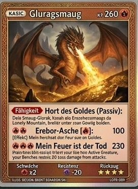

<!DOCTYPE html>
<html lang="de">
<head>
<meta charset="UTF-8">
<meta name="viewport" content="width=device-width, initial-scale=1.0, maximum-scale=1.0, user-scalable=no">
<title>Die Mittelerde-Reise – Vokabelschlachten</title>
<link rel="preconnect" href="https://fonts.googleapis.com">
<link href="https://fonts.googleapis.com/css2?family=Cinzel:wght@600;700&family=Nunito:wght@400;600;700;800&display=swap" rel="stylesheet">
<style>
  :root{
    --ink:#141b26; --ink2:#1d2836; --parchment:#f5ead0; --gold:#d9a83c; --gold2:#ffd76e;
    --red:#c0453a; --green:#5a9a5a; --blue:#3f6fa8; --card-w:min(340px,86vw);
    --parch-ink:#4a3423; --parch-ink2:#6b4a2f;
  }
  *{box-sizing:border-box}
  body{margin:0;background:radial-gradient(ellipse at top,#1c2636,var(--ink) 60%);color:var(--parchment);
    font-family:'Nunito',sans-serif;min-height:100vh;padding-bottom:40px}
  h1,h2,h3,.cin{font-family:'Cinzel',serif}
  #stars{position:fixed;inset:0;z-index:0;pointer-events:none;opacity:.5}
  #app{position:relative;z-index:1;max-width:720px;margin:0 auto;padding:16px}
  .topbar{display:flex;align-items:center;justify-content:space-between;gap:10px;padding:10px 14px;
    background:linear-gradient(160deg,var(--ink2),#151d29);border:1px solid rgba(217,168,60,.35);border-radius:16px;margin-bottom:14px}
  .topbar .t{font-family:'Cinzel',serif;color:var(--gold2);font-size:15px}
  .badge{background:rgba(217,168,60,.15);border:1px solid rgba(217,168,60,.4);border-radius:20px;padding:4px 12px;font-size:13px;font-weight:700}
  .btn{font-family:'Nunito',sans-serif;font-weight:800;font-size:15px;padding:12px 20px;border-radius:14px;border:none;
    cursor:pointer;background:linear-gradient(160deg,var(--gold2),var(--gold));color:#231a06;box-shadow:0 4px 0 #8a6417;
    transition:transform .08s}
  .btn:active{transform:translateY(3px);box-shadow:0 1px 0 #8a6417}
  .btn.ghost{background:transparent;color:var(--gold2);border:2px solid rgba(217,168,60,.5);box-shadow:none}
  .btn.red{background:linear-gradient(160deg,#e08277,var(--red));color:#2b0c08;box-shadow:0 4px 0 #7c2a22}
  .btn.green{background:linear-gradient(160deg,#8fd08f,var(--green));color:#0e1f0e;box-shadow:0 4px 0 #326632}
  .btn:disabled{opacity:.4;cursor:default}
  .btnRow{display:flex;gap:10px;flex-wrap:wrap;margin:14px 0}
  .sectionTitle{font-family:'Cinzel',serif;color:var(--gold);font-size:clamp(18px,3.5vw,24px);margin:10px 0 6px}
  .hint-sm{font-size:13px;opacity:.75;line-height:1.5;margin:4px 0 14px}
  .card{background:linear-gradient(160deg,var(--ink2),#151d29);border:1px solid rgba(217,168,60,.35);
    border-radius:18px;padding:18px;margin:12px 0}
  /* ---- Story / intro ---- */
  .storyBox{text-align:center;padding:20px 10px}
  .storyBox img{width:min(220px,60vw);border-radius:16px;box-shadow:0 8px 30px rgba(0,0,0,.5)}
  /* ---- Landkarte (Pergament) ---- */
  .mapWrap{position:relative;width:100%;border-radius:10px;overflow:hidden;
    border:10px solid #2b1d12;outline:2px solid #7a5a35;outline-offset:-13px;
    box-shadow:0 10px 34px rgba(0,0,0,.55);margin:10px 0}
  .mapWrap img.bg{display:block;width:100%;height:auto}
  .mapWrap svg.overlay{position:absolute;inset:0;width:100%;height:100%}
  .mapPin{position:absolute;transform:translate(-50%,-50%);display:flex;flex-direction:column;align-items:center;
    width:94px;cursor:pointer;text-align:center;filter:drop-shadow(0 2px 3px rgba(0,0,0,.45))}
  .mapPin.locked{cursor:default}
  .pinBadge{width:42px;height:42px;border-radius:50%;background:radial-gradient(circle at 35% 30%,#e8c98a,#a9762f);
    border:2.5px solid var(--parch-ink);display:flex;align-items:center;justify-content:center;font-size:20px;position:relative}
  .mapPin.done .pinBadge{border-color:#3f5e2e;background:radial-gradient(circle at 35% 30%,#c9d9a0,#7a9a54)}
  .mapPin.current .pinBadge{border-color:#8a2c1f;animation:pinpulse 1.8s infinite}
  .mapPin.locked .pinBadge{filter:grayscale(1) brightness(.8) opacity(.75)}
  .mapPin.boss .pinBadge{width:56px;height:56px;font-size:28px;border-color:#7a1810;border-width:3px;
    background:radial-gradient(circle at 35% 30%,#e0a878,#8a3a1f)}
  .pinNum{position:absolute;top:-6px;right:-6px;width:18px;height:18px;border-radius:50%;background:#f2e4c4;
    border:1.5px solid var(--parch-ink);font-size:9.5px;font-weight:800;display:flex;align-items:center;justify-content:center;color:var(--parch-ink)}
  .pinCheck{position:absolute;bottom:-4px;right:-6px;font-size:14px}
  .pinLock{position:absolute;bottom:-2px;right:-4px;font-size:11px;opacity:.9}
  .pinLabel{font-family:'Cinzel',serif;font-size:10.5px;font-weight:700;color:var(--parch-ink);margin-top:4px;line-height:1.15;
    background:rgba(240,225,190,.88);padding:1.5px 6px;border-radius:6px;border:1px solid rgba(74,52,35,.3)}
  .mapPin.locked .pinLabel{opacity:.7}
  .pinSub{font-size:9px;opacity:.9;margin-top:2px;color:#3a2a1a;background:rgba(240,225,190,.75);padding:1px 5px;border-radius:5px}
  @keyframes pinpulse{0%,100%{box-shadow:0 0 0 0 rgba(138,44,31,.55)}50%{box-shadow:0 0 0 9px rgba(138,44,31,0)}}
  /* ---- Battle ---- */
  .battleTop{display:flex;justify-content:space-between;align-items:flex-start;gap:14px;margin-bottom:10px}
  .foe{text-align:center;flex:1}
  .foe .art{font-size:64px;line-height:1}
  .foe img{width:110px;border-radius:12px;box-shadow:0 6px 20px rgba(0,0,0,.5)}
  .foe .fname{font-family:'Cinzel',serif;color:var(--gold2);font-size:14px;margin-top:4px}
  .hpWrap{background:rgba(255,255,255,.08);border-radius:8px;height:14px;overflow:hidden;margin-top:6px;border:1px solid rgba(0,0,0,.3)}
  .hpBar{height:100%;background:linear-gradient(90deg,#e0574a,#ff8a7a);transition:width .5s ease}
  .hpBar.ally{background:linear-gradient(90deg,#5a9a5a,#8fd08f)}
  .hpText{font-size:11px;opacity:.8;margin-top:2px}
  .streakRow{display:flex;align-items:center;justify-content:center;gap:8px;margin:8px 0 14px}
  .streakDot{width:12px;height:12px;border-radius:50%;background:rgba(255,255,255,.15);border:1px solid rgba(255,255,255,.25)}
  .streakDot.on{background:var(--gold2);border-color:var(--gold2)}
  .streakDot.tier2.on{background:#7fd8ff;border-color:#7fd8ff}
  .streakDot.tier3.on{background:#ff8a7a;border-color:#ff8a7a}
  .qBox{background:rgba(0,0,0,.2);border-radius:14px;padding:18px;text-align:center;margin:10px 0}
  .qLabel{font-size:12px;letter-spacing:.06em;text-transform:uppercase;opacity:.65;margin-bottom:6px}
  .qText{font-size:clamp(19px,4.6vw,25px);font-weight:800;line-height:1.35}
  .qText i{color:var(--gold2);font-style:normal}
  .opts{display:grid;grid-template-columns:1fr 1fr;gap:10px;margin-top:14px}
  .opt{font-family:'Nunito',sans-serif;font-size:15px;font-weight:700;padding:14px 8px;border-radius:12px;
    border:2px solid rgba(217,168,60,.4);background:rgba(255,255,255,.04);color:var(--parchment);cursor:pointer}
  .opt.correct{background:rgba(90,154,90,.35);border-color:var(--green)}
  .opt.wrong{background:rgba(192,69,58,.35);border-color:var(--red)}
  .fillIn{width:100%;max-width:340px;font-size:19px;font-weight:700;text-align:center;padding:14px;border-radius:12px;
    border:2px solid rgba(217,168,60,.5);background:rgba(255,255,255,.06);color:var(--parchment);margin-top:12px}
  .fillIn:focus{outline:none;border-color:var(--gold2)}
  .fillIn.correct{border-color:var(--green);background:rgba(90,154,90,.25)}
  .fillIn.wrong{border-color:var(--red);background:rgba(192,69,58,.25)}
  .fb{margin:12px auto 0;max-width:520px;padding:14px 16px;border-radius:14px;border:2px solid;text-align:center}
  .fb.ok{background:rgba(90,154,90,.18);border-color:rgba(90,154,90,.7)}
  .fb.no{background:rgba(192,69,58,.18);border-color:rgba(192,69,58,.7)}
  .fb .fbTitle{font-family:'Cinzel',serif;font-size:17px;font-weight:700;margin-bottom:6px}
  .fb.ok .fbTitle{color:#a8e0a8}
  .fb.no .fbTitle{color:#ffab9e}
  .fb .fbLine{font-size:15px;line-height:1.6;margin:4px 0}
  .fb .fbWord{font-weight:800;color:var(--gold2);font-size:17px}
  .fb .fbDe{opacity:.85;font-size:14px}
  .fb .yours{text-decoration:line-through;opacity:.8}
  .atkFx{text-align:center;font-family:'Cinzel',serif;color:var(--gold2);font-size:15px;min-height:22px;margin-top:8px}
  /* ---- Roster ---- */
  .rosterGrid{display:grid;grid-template-columns:repeat(auto-fill,minmax(90px,1fr));gap:10px;margin:10px 0}
  .rslot{text-align:center;background:rgba(0,0,0,.2);border-radius:12px;padding:8px 4px;border:1px solid rgba(217,168,60,.25)}
  .rslot img{width:100%;border-radius:8px;aspect-ratio:5/7;object-fit:cover}
  .rslot .rn{font-size:10.5px;margin-top:4px;line-height:1.2;min-height:24px}
  .rslot .rtier{font-size:9px;opacity:.6;text-transform:uppercase}
  .rslot .mystery{width:100%;aspect-ratio:5/7;border-radius:8px;display:flex;align-items:center;justify-content:center;
    background:repeating-linear-gradient(135deg,#1b2431 0 8px,#18202c 8px 16px);
    border:2px dashed rgba(217,168,60,.4)}
  .rslot .mystery span{font-family:'Cinzel',serif;font-size:24px;color:rgba(217,168,60,.7)}
  .rslot.locked{opacity:.55}
  /* ---- Starter picker ---- */
  .starterGrid{display:flex;gap:16px;justify-content:center;flex-wrap:wrap;margin:18px 0}
  .starterCard{width:150px;text-align:center;background:rgba(0,0,0,.2);border:2px solid rgba(217,168,60,.35);
    border-radius:16px;padding:12px;cursor:pointer;transition:transform .15s,border-color .15s}
  .starterCard:hover,.starterCard:active{transform:translateY(-4px);border-color:var(--gold2)}
  .starterCard img{width:100%;border-radius:10px}
  .starterCard .sn{font-family:'Cinzel',serif;font-size:13px;margin-top:8px;color:var(--gold2)}
  /* ---- Result ---- */
  .result{text-align:center;padding:24px 10px}
  .result h2{font-size:26px;color:var(--gold2);margin-bottom:6px}
  .rewardCard{width:min(220px,60vw);margin:16px auto;border-radius:14px;overflow:hidden;box-shadow:0 8px 30px rgba(217,168,60,.4)}
  .rewardCard img{width:100%;display:block}
  /* ---- Settings row ---- */
  .segRow{display:flex;gap:8px;flex-wrap:wrap;margin:8px 0 16px}
  .seg{flex:1;min-width:90px;text-align:center;padding:10px 8px;border-radius:12px;border:2px solid rgba(217,168,60,.35);
    background:rgba(255,255,255,.04);cursor:pointer;font-weight:700;font-size:13px}
  .seg.active{background:rgba(217,168,60,.25);border-color:var(--gold2);color:var(--gold2)}
  .evBar{height:10px;background:rgba(255,255,255,.08);border-radius:6px;overflow:hidden;margin:3px 0}
  .evBar i{display:block;height:100%;border-radius:6px}
  a{color:var(--gold2)}
</style>
</head>
<body>
<svg id="stars" width="100%" height="100%"></svg>
<div id="app"></div>
<script>
const VOCAB_RAW = [["h001", "hello", "Hallo.", "___! My name is Tom.", "hello", 5], ["h002", "my name is", "ich heiße", "___ Tom.", "hello", 5], ["h003", "to be", "sein", "I am, you ___, he/she/it is ...", "hello", 5], ["h004", "what's your name", "wie heißt du", "___? – My name is Tom.", "hello", 5], ["h005", "hi", "Hi; Hallo", "___ Alina! – Hello Linus!", "hello", 5], ["h006", "i'm", "ich bin", "___ Tom.", "hello", 5], ["h007", "where are you from", "woher kommst du", "___? – I'm from Poland.", "hello", 5], ["h008", "i'm from", "ich bin aus", "___ Berlin.", "hello", 5], ["h009", "but", "aber", "I'm from Berlin, ___ I live in Dortmund.", "hello", 5], ["h010", "i live in", "ich wohne in", "___ Leipzig.", "hello", 5], ["h011", "to live", "wohnen; leben", "I ___ in Leipzig.", "hello", 5], ["h012", "how old are you", "wie alt bist du", "___? – I'm ten.", "hello", 5], ["h013", "me too", "ich auch", "I'm from Berlin. – ___.", "hello", 5], ["h014", "see you", "bis dann; bis", "___ in Berlin!", "hello", 5], ["h015", "to see", "sehen", "I can ___ you.", "hello", 5], ["h016", "bye", "tschüss", "___! ↔ Hello!", "hello", 5], ["h017", "new", "neu", "I'm ___ in Dortmund.", "hello", 5], ["h018", "friend", "Freund; Freundin", "Sherlock is my new ___.", "hello", 5], ["h019", "zero", "null", null, "hello", 5], ["h020", "one", "eins", null, "hello", 5], ["h021", "two", "zwei", null, "hello", 5], ["h022", "three", "drei", null, "hello", 5], ["h023", "four", "vier", null, "hello", 5], ["h024", "five", "fünf", null, "hello", 5], ["h025", "six", "sechs", null, "hello", 5], ["h026", "seven", "sieben", null, "hello", 5], ["h027", "eight", "acht", null, "hello", 5], ["h028", "nine", "neun", null, "hello", 5], ["h029", "ten", "zehn", null, "hello", 5], ["h030", "eleven", "elf", null, "hello", 5], ["h031", "twelve", "zwölf", null, "hello", 5], ["h032", "black", "schwarz", null, "hello", 5], ["h033", "blue", "blau", null, "hello", 5], ["h034", "brown", "braun", null, "hello", 5], ["h035", "green", "grün", null, "hello", 5], ["h036", "grey", "grau", null, "hello", 5], ["h037", "orange", "orange", null, "hello", 5], ["h038", "pink", "pink; rosa", null, "hello", 5], ["h039", "purple", "lila", null, "hello", 5], ["h040", "red", "rot", null, "hello", 5], ["h041", "white", "weiß", null, "hello", 5], ["h042", "yellow", "gelb", null, "hello", 5], ["h043", "my favourite", "mein/e Lieblings-", "___ colour is green.", "hello", 5], ["h044", "i like", "mir gefällt; ich mag", "___ your yellow T-shirt.", "hello", 5], ["h045", "to like", "mögen; gern haben", "I ___ the park.", "hello", 5], ["h046", "to take photos", "Fotos machen", "Can you ___?", "hello", 5], ["h047", "great", "großartig; toll; super", "Cats are ___!", "hello", 5], ["h048", "big", "groß", "Sherlock is a big dog.", "hello", 5], ["h049", "sister", "Schwester", "Sophie is Lily's ___.", "hello", 5], ["h050", "best", "beste/-r/-s", "Sophie is my ___ friend.", "hello", 5], ["h051", "and", "und", "Ryan ___ Ruby are my friends.", "hello", 5], ["h052", "we're", "wir sind", "___ from Greenwich.", "hello", 5], ["h053", "twin", "Zwilling", "Ryan and Ruby are ___s.", "hello", 5], ["h054", "to have", "haben", "I ___ a black and white cat.", "hello", 5], ["h055", "funny", "lustig; witzig", "Ryan and Ruby have a ___ dog.", "hello", 5], ["h056", "football", "Fußball", "I play ___. You too?", "hello", 5], ["h057", "food", "Essen; Lebensmittel", "What's your favourite ___?", "hello", 5], ["h058", "to cook", "kochen", "Cooking is great!", "hello", 5], ["h059", "netball", "Korbball", null, "hello", 5], ["h060", "he's", "er ist", "Karam is from Egypt. ___ eleven.", "hello", 5], ["h061", "good", "gut", "Ryan and Sherlock are ___ friends.", "hello", 5], ["h062", "brother", "Bruder", "Ryan and Ruby are brother and sister.", "hello", 5], ["h063", "who is it", "wer ist es", "___? – It's Lily!", "hello", 5], ["h064", "or", "oder", "\"My favourite colour is blue.\" – Is it Ruby ___ Ryan?", "hello", 5], ["h065", "hobby", "Hobby", "Cooking and taking photos are two great hobbies.", "hello", 5], ["h066", "you too", "du/ihr/Sie auch", "I'm from Leipzig. ___?", "hello", 5], ["h067", "to watch", "beobachten; ansehen; zuschauen", "Let's ___ videos.", "hello", 5], ["h068", "you're", "du bist; Sie sind", "___ my best friend.", "hello", 5], ["h069", "my turn", "ich bin dran", "It's ___.", "hello", 5], ["h070", "to draw", "zeichnen", "I can ___ a cat.", "hello", 5], ["h071", "picture", "Bild; Foto", "You draw a ___. You take a photo.", "hello", 5], ["h072", "pet", "Haustier", "Sherlock is a ___.", "hello", 5], ["h073", "game", "Spiel", "We can play my new ___.", "hello", 5], ["h074", "to sing", "singen", "Can you ___?", "hello", 5], ["h075", "horse", "Pferd", "You can ride a bike or a ___.", "hello", 5], ["h076", "to dance", "tanzen", "I like ___ing.", "hello", 5], ["h077", "house", "Haus", "Karam's ___ is in Greenwich.", "hello", 5], ["h078", "bored", "gelangweilt", "I'm ___. – Mir ist langweilig.", "hello", 5], ["h079", "let's", "lass(t) uns", "___ play in the park!", "hello", 5], ["h080", "to go", "gehen; fahren", "I live in Greenwich now and I ___ to a new school.", "hello", 5], ["h081", "to", "zu; nach; auf; in", null, "hello", 5], ["h082", "how are you", "wie geht es dir", "___? – I'm OK.", "hello", 5], ["h083", "fine", "gut; in Ordnung", "How are you? – I'm ___.", "hello", 5], ["h084", "thanks", "danke", "___ for the photos.", "hello", 5], ["h085", "this", "dies; diese/-r/-s", "___ is my dog.", "hello", 5], ["h086", "she", "sie", "___ is my friend.", "hello", 5], ["h087", "here", "hier", "This is my house. I live ___.", "hello", 5], ["h088", "tomorrow", "morgen", "___ is Saturday.", "hello", 5], ["h089", "the first day of school", "der erste Schultag", null, "hello", 5], ["h090", "yes", "ja", "Are you from Greenwich? – ___, you too?", "hello", 5], ["h091", "come on", "komm(t) schon", "___! I'm bored, let's go!", "hello", 5], ["h092", "to come", "kommen", "Can you ___ to my house tomorrow?", "hello", 5], ["h093", "it's time for", "es ist Zeit für", "___ school, let's go.", "hello", 5], ["h094", "ice cream", "Eis; Eiscreme", "The friends like ___.", "hello", 5], ["h095", "can't", "kann/können nicht", "I ___ sing. Can you?", "hello", 5], ["h096", "me", "mich; mir", "Can you see ___?", "hello", 5], ["h097", "welcome to", "willkommen in", "___ London!", "hello", 5], ["h098", "what can you hear", "was kannst du hören", "___ in London, Sherlock?", "hello", 5], ["h099", "to hear", "hören", "Hello, can you ___ me?", "hello", 5], ["h100", "the", "der; die; das", "The ___ wird vor Vokalen [ði] gesprochen.", "hello", 5], ["h101", "i can", "ich kann", "___ see Sherlock.", "hello", 5], ["h102", "a", "ein/-e", "___ friend", "hello", 5], ["h103", "boat", "Boot", "Can you see the ___?", "hello", 5], ["h104", "flower", "Blume", "a ___, flowers", "hello", 5], ["h105", "girl", "Mädchen", "Alina is a ___.", "hello", 5], ["h106", "on", "auf; an; am; in; im", "I can see you ___ the boat.", "hello", 5], ["h107", "skates", "Inlineskates; Rollschuhe", "My friend is on ___.", "hello", 5], ["h108", "boy", "Junge", "I can see boys on skateboards.", "hello", 5], ["h109", "mother", "Mutter", "My ___ is from London.", "hello", 5], ["h110", "father", "Vater", "My ___ is from Poland.", "hello", 5], ["h111", "dog", "Hund", "Sherlock is a ___.", "hello", 5], ["h112", "cat", "Katze", "A ___ is in the park.", "hello", 5], ["h113", "bird", "Vogel", "I can see a ___.", "hello", 5], ["h114", "butterfly", "Schmetterling", null, "hello", 5], ["h115", "bee", "Biene", "A ___ is on the flower.", "hello", 5], ["h116", "tree", "Baum", "I can see birds in the ___s.", "hello", 5], ["h117", "grass", "Gras", "I'm on the ___.", "hello", 5], ["h118", "bike", "Fahrrad", null, "hello", 5], ["h119", "to have a picnic", "ein Picknick machen", "You can ___ in the park.", "hello", 5], ["h120", "to read", "lesen", "The text is in English. Can you ___ it?", "hello", 5], ["h121", "book", "Buch", "I can read a ___.", "hello", 5], ["h122", "to play", "spielen", "You can ___ football in the park.", "hello", 5], ["h123", "to ride", "fahren; reiten", "You can ___ a bike.", "hello", 5], ["h124", "to talk to", "reden mit", "___ your friends.", "hello", 5], ["h125", "clouds", "Wolken", null, "hello", 5], ["h126", "river", "Fluss", null, "hello", 5], ["h127", "sky", "Himmel", null, "hello", 5], ["h128", "merry-go-round", "Karussell", null, "hello", 5], ["h129", "dog on a leash", "Hund an der Leine", null, "hello", 5], ["h130", "parrot", "Papagei", null, "hello", 5], ["h131", "pigeon", "Taube", null, "hello", 5], ["h132", "jeans", "Jeans", null, "hello", 5], ["h133", "red t-shirt", "rotes T-Shirt", null, "hello", 5], ["h134", "green trousers", "grüne Hose", null, "hello", 5], ["h135", "helmet", "Helm", null, "hello", 5], ["h136", "white trainers", "weiße Turnschuhe", null, "hello", 5], ["h137", "food truck", "Imbisswagen", null, "hello", 5], ["h138", "plane", "Flugzeug", null, "hello", 5], ["h139", "ship", "Schiff", null, "hello", 5], ["h140", "baby", "Baby", null, "hello", 5], ["h141", "man", "Mann", null, "hello", 5], ["h142", "woman", "Frau", null, "hello", 5], ["h143", "to have a snack", "eine Kleinigkeit essen", null, "hello", 5], ["h144", "to eat pizza", "Pizza essen", null, "hello", 5], ["h145", "to eat a sandwich", "ein Sandwich essen", null, "hello", 5], ["h146", "to eat a banana", "eine Banane essen", null, "hello", 5], ["h147", "to meet friends", "Freunde treffen", null, "hello", 5], ["h148", "to sit on a bench", "auf einer Bank sitzen", null, "hello", 5], ["h149", "number", "Zahl; Nummer", "11 is a ___.", "hello", 5], ["h150", "colour", "Farbe", "Red is a ___.", "hello", 5], ["h151", "shorts", "Shorts; kurze Hose", "Your ___ are green.", "hello", 5], ["h152", "the alphabet", "das Alphabet", "Can you say the ___?", "hello", 5], ["u1001", "year", "Jahr; Schuljahr", "This is my first ___ at Thomas Tallis.", "unit1", 5], ["u1002", "to look at", "anschauen; ansehen", "___ this picture in my book.", "unit1", 5], ["u1003", "us", "uns", "Can you hear ___?", "unit1", 5], ["u1004", "to look", "schauen; sehen; aussehen", "Where's my ruler? – ___ in your pencil case.", "unit1", 5], ["u1005", "over there", "da drüben; dort drüben", "Your school things are ___.", "unit1", 5], ["u1006", "nervous", "nervös; aufgeregt", "I'm ___.", "unit1", 5], ["u1007", "don't worry", "keine Sorge", "It's OK. ___!", "unit1", 5], ["u1008", "to sit", "sitzen", "Where can we sit? – Let's ___ here, OK?", "unit1", 5], ["u1009", "together", "zusammen; miteinander", "Let's go to school ___.", "unit1", 5], ["u1010", "sports ground", "Sportplatz", "Let's play football on the ___.", "unit1", 5], ["u1011", "why", "warum", "___ is Sherlock at school?", "unit1", 5], ["u1012", "mrs", "Frau (Anrede)", null, "unit1", 5], ["u1013", "teacher", "Lehrer; Lehrerin", "The ___s at TTS are great.", "unit1", 5], ["u1014", "please", "bitte", "Can we sit together, ___?", "unit1", 5], ["u1015", "to take", "nehmen; mitnehmen; bringen", "Take that ball and go play with Sherlock.", "unit1", 5], ["u1016", "home", "nach Hause", "Let's go ___.", "unit1", 5], ["u1017", "crazy", "verrückt", "Sherlock, why are you at school?! You're ___, go home!", "unit1", 5], ["u1018", "look", "schau/schaut mal", "___! It's Sherlock!", "unit1", 5], ["u1019", "that's", "das ist", "___ my friend Ryan over there.", "unit1", 5], ["u1020", "in front of", "vor", "Look, it's Sherlock, ___ the school!", "unit1", 5], ["u1021", "happy", "glücklich; froh; fröhlich", "Sherlock is a ___ dog.", "unit1", 5], ["u1022", "to think", "denken; glauben; finden", "I ___ Sherlock is bored.", "unit1", 5], ["u1023", "angry", "wütend; verärgert; böse", "The teacher is ___.", "unit1", 5], ["u1024", "surprised", "überrascht", "The friends are ___ to see Sherlock at school.", "unit1", 5], ["u1025", "sad", "traurig", "sad ↔ happy", "unit1", 5], ["u1026", "uniform", "Uniform", "The uniforms at Thomas Tallis School are grey and blue.", "unit1", 5], ["u1027", "boring", "langweilig", "School can be ___.", "unit1", 5], ["u1028", "ugly", "hässlich", "That photo is ugly!", "unit1", 5], ["u1029", "silly", "dumm; doof; albern", "That's a ___ game! Let's play a new game.", "unit1", 5], ["u1030", "to look for", "suchen nach", "Let's ___ Sherlock.", "unit1", 5], ["u1031", "no", "kein/-e", "___ cats in my bedroom!", "unit1", 5], ["u1032", "today", "heute", "___ is the first day of school.", "unit1", 5], ["u1033", "bedroom", "Schlafzimmer", "The walls in my ___ are green.", "unit1", 5], ["u1034", "under", "unter", "Sherlock, why are you ___ my bed?", "unit1", 5], ["u1035", "bed", "Bett", "That's Sherlock's ___, not Ryan's.", "unit1", 5], ["u1036", "good morning", "guten Morgen", "___, Mrs Wilson.", "unit1", 5], ["u1037", "tutor", "Klassenlehrer; Klassenlehrerin", null, "unit1", 5], ["u1038", "not", "nicht", "I'm ___ ten, I'm eleven!", "unit1", 5], ["u1039", "friendly", "freundlich; nett", "Mrs Wilson is ___.", "unit1", 5], ["u1040", "to help", "helfen", "I can't do this. Can you ___ me, please?", "unit1", 5], ["u1041", "question", "Frage", "___: How old are you?", "unit1", 5], ["u1042", "planner", "Handbuch; Kalender", null, "unit1", 5], ["u1043", "timetable", "Stundenplan; Fahrplan", "A ___ shows you what lessons you have.", "unit1", 5], ["u1044", "map", "Stadtplan; Landkarte", "Look at the ___ in your book.", "unit1", 5], ["u1045", "rule", "Regel", "You can read the ___s in the planner.", "unit1", 5], ["u1046", "lesson", "Unterrichtsstunde; Unterricht", "What's your favourite ___?", "unit1", 5], ["u1047", "strict", "streng; strikt", "The school rules are ___.", "unit1", 5], ["u1048", "library", "Bibliothek; Bücherei", null, "unit1", 5], ["u1049", "an", "ein/-e", "a cat, a dog ABER: ___ animal, ___ idea", "unit1", 5], ["u1050", "assembly", "Versammlung; Morgenappell", null, "unit1", 5], ["u1051", "hall", "Halle; Saal", "Let's go to the assembly ___.", "unit1", 5], ["u1052", "gym", "Turnhalle", null, "unit1", 5], ["u1053", "recording studio", "Aufnahmestudio; Tonstudio", null, "unit1", 5], ["u1054", "to show", "zeigen", "___ me your new skates.", "unit1", 5], ["u1055", "tour", "Tour; Fahrt; Rundgang", "Let's take a ___ of TTS.", "unit1", 5], ["u1056", "to have lunch", "zu Mittag essen", "Can we ___?", "unit1", 5], ["u1057", "cafeteria", "Cafeteria", "Lunch at school is in the ___.", "unit1", 5], ["u1058", "excuse me", "entschuldigung; entschuldigen sie", null, "unit1", 5], ["u1059", "art", "Kunst; Kunstunterricht", "My favourite lesson is ___.", "unit1", 5], ["u1060", "room", "Zimmer; Raum", "What colour is your ___?", "unit1", 5], ["u1061", "to say", "sagen; aufsagen; sprechen", "Can you ___ the alphabet?", "unit1", 5], ["u1062", "there", "da; dort; dahin", "Look ___!", "unit1", 5], ["u1063", "student", "Schüler; Schülerin; Student; Studentin", null, "unit1", 5], ["u1064", "to want", "wollen; mögen", "I ___ to play a game.", "unit1", 5], ["u1065", "drink", "Getränk", "Where's your ___? – It's in my schoolbag.", "unit1", 5], ["u1066", "classroom", "Klassenzimmer", null, "unit1", 5], ["u1067", "my", "mein/-e", null, "unit1", 5], ["u1068", "your", "dein/-e", null, "unit1", 5], ["u1069", "his", "sein/-e", null, "unit1", 5], ["u1070", "her", "ihr/-e", null, "unit1", 5], ["u1071", "its", "sein/-e", null, "unit1", 5], ["u1072", "our", "unser/-e", null, "unit1", 5], ["u1073", "their", "ihr/-e", null, "unit1", 5], ["u1074", "what's wrong", "was ist los; was stimmt nicht", "___? Why are you sad?", "unit1", 5], ["u1075", "scary", "unheimlich; gruselig; beängstigend", null, "unit1", 5], ["u1076", "everything", "alles", "Don't worry. ___ is OK.", "unit1", 5], ["u1077", "mum", "Mama", "Where is your ___, Lily?", "unit1", 5], ["u1078", "parents", "Eltern", null, "unit1", 5], ["u1079", "divorced", "geschieden", null, "unit1", 5], ["u1080", "alone", "allein; ohne fremde Hilfe", "Look! I can ride my bike ___.", "unit1", 5], ["u1081", "easy", "einfach; leicht", "That's easy-peasy!", "unit1", 5], ["u1082", "after", "nach (zeitlich)", "Let's go to the park ___ school.", "unit1", 5], ["u1083", "dad", "Papa", "My ___ is from Poland.", "unit1", 5], ["u1084", "to be right", "recht haben", "Greenwich is in London. – You're ___.", "unit1", 5], ["u1085", "family", "Familie", "My ___ is nice.", "unit1", 5], ["u1086", "word", "Wort", "'Dog' is the English ___ for 'Hund'.", "unit1", 5], ["u1087", "place", "Ort; Stelle; Platz", null, "unit1", 5], ["u1088", "people", "Leute; Menschen", "Sshhh! ___ are in the library.", "unit1", 5], ["u1089", "nice", "schön; nett; lieb", "You're a ___ dog, Sherlock!", "unit1", 5], ["u1090", "there is/are", "da ist/sind; es gibt", "Look, ___ a dog.", "unit1", 5], ["u1091", "class", "Klasse; Schulklasse", "This is my new ___.", "unit1", 5], ["u1092", "media centre", "Medienzentrum", null, "unit1", 5], ["u1093", "table", "Tisch", "Can you see a ___ in the picture?", "unit1", 5], ["u1094", "headphones", "Kopfhörer", null, "unit1", 5], ["u1095", "to use", "benutzen; verwenden", "Can I ___ your red pen, please?", "unit1", 5], ["u1096", "break", "Pause", "After the first two lessons there's a ___.", "unit1", 5], ["u1097", "power socket", "Steckdose", null, "unit1", 5], ["u1098", "reading corner", "Leseecke", null, "unit1", 5], ["u1099", "newspaper", "Zeitung", "Look at that funny photo in the ___!", "unit1", 5], ["u1100", "magazine", "Zeitschrift", "I like football ___s.", "unit1", 5], ["u1101", "to find", "finden; herausfinden", "I can't ___ the recording studio.", "unit1", 5], ["u1102", "man", "Mann; men (Pl.)", "The ___ in the photo is my dad.", "unit1", 5], ["u1103", "behind", "hinter", "behind ↔ in front of", "unit1", 5], ["u1104", "information desk", "Infotheke", null, "unit1", 5], ["u1105", "noticeboard", "schwarzes Brett", "What information is there on the ___?", "unit1", 5], ["u1106", "next to", "neben", "I like this picture! That's my best friend ___ me.", "unit1", 5], ["u1107", "door", "Tür", "That's his house – with the green ___.", "unit1", 5], ["u1108", "wall", "Wand; Mauer", "What colour are the ___s in your room?", "unit1", 5], ["u1109", "chair", "Stuhl", "There are two ___s in my room.", "unit1", 5], ["u1110", "clock", "Uhr", "Look at the ___! We're late for school.", "unit1", 5], ["u1111", "desk", "Schreibtisch", "In the classroom there are 20 ___s for 20 students.", "unit1", 5], ["u1112", "to forget", "vergessen", "Don't ___ the drinks for lunch.", "unit1", 5], ["u1113", "veggie", "vegetarisch", null, "unit1", 5], ["u1114", "chips", "Pommes frites", null, "unit1", 5], ["u1115", "yuk", "igitt", null, "unit1", 5], ["u1116", "allergic to", "allergisch gegen", null, "unit1", 5], ["u1117", "tomato", "Tomate", "For a pizza, you need ___es and cheese.", "unit1", 5], ["u1118", "fresh", "frisch", "The food at the school cafeteria is ___.", "unit1", 5], ["u1119", "all", "alle/-s; ganz", "___ the students are in the classroom.", "unit1", 5], ["u1120", "to stare", "starren; anstarren", "Don't ___ at me!", "unit1", 5], ["u1121", "rude", "unhöflich; unverschämt", "Ryan isn't a ___ boy. He's nice.", "unit1", 5], ["u1122", "to do", "machen; tun", "It's a nice day. What can we ___?", "unit1", 5], ["u1123", "to bring", "bringen; mitbringen", "The twins can't ___ Sherlock to school.", "unit1", 5], ["u1124", "to buy", "kaufen", null, "unit1", 5], ["u1125", "to eat", "essen; fressen", null, "unit1", 5], ["u1126", "to talk about", "sprechen über; reden über", null, "unit1", 5], ["u1127", "polite", "höflich", "polite ↔ rude", "unit1", 5], ["u1128", "too", "zu", "Don't talk ___ much with your classmates.", "unit1", 5], ["u1129", "classmate", "Klassenkamerad; Mitschüler", "Lily is Ruby's new ___ and friend.", "unit1", 5], ["u1130", "homework", "Hausaufgabe(n)", "Our ___ today is easy.", "unit1", 5], ["u1131", "right", "richtig; korrekt", null, "unit1", 5], ["u1132", "to sleep", "schlafen", "Don't ___ in class.", "unit1", 5], ["u1133", "on the phone", "am Telefon", null, "unit1", 5], ["u1134", "to ask", "fragen; bitten", "Where's Sherlock? – Let's ask Ryan.", "unit1", 5], ["u1135", "to send", "schicken; senden", "___ me photos, please!", "unit1", 5], ["u1136", "hair", "Haar; Haare", "Her ___ is long.", "unit1", 5], ["u1137", "take a tour of", "begib dich auf eine Tour durch", null, "unit1", 5], ["u1138", "reception area", "Empfangsbereich", null, "unit1", 5], ["u1139", "fast", "schnell", "Ask a classmate for a ___ answer.", "unit1", 5], ["u1140", "to be prepared", "bereit sein", null, "unit1", 5], ["u1141", "to focus on", "sich konzentrieren auf", null, "unit1", 5], ["u1142", "other", "anders; andere/-r/-s; weitere", "I like drawing, but I have ___ hobbies too.", "unit1", 5], ["u1143", "to give", "geben; schenken", "Can you ___ me your marker, please?", "unit1", 5], ["u1144", "problem", "Problem; Schwierigkeit", "Sherlock at school? That's a ___ for Mrs Wilson.", "unit1", 5], ["u1145", "cupboard", "Küchenschrank; Schrank", null, "unit1", 5], ["u1146", "what a mess", "was für eine Unordnung", "Is this your schoolbag? ___!", "unit1", 5], ["u1147", "to break a rule", "gegen eine Regel verstoßen", "Don't ___.", "unit1", 5], ["u1148", "sorry", "entschuldigung; tut mir leid", null, "unit1", 5], ["u1149", "the others", "die anderen", null, "unit1", 5], ["u1150", "beginning", "Anfang; Beginn", null, "unit1", 5], ["u1151", "ending", "Ende; Schluss", "ending (einer Geschichte)", "unit1", 5], ["u1152", "in trouble", "in Schwierigkeiten", null, "unit1", 5], ["u1153", "must", "müssen", null, "unit1", 5], ["u1154", "to clean", "säubern; reinigen", null, "unit1", 5], ["u1155", "to pay for", "bezahlen", null, "unit1", 5], ["u1156", "window", "Fenster", null, "unit1", 5], ["u1157", "to listen to", "zuhören; anhören", null, "unit1", 5], ["u1158", "everywhere", "überall", "There are cool things ___ in your room!", "unit1", 5], ["u1159", "special", "besonders; speziell", null, "unit1", 5], ["u1160", "dream", "Traum; Traum-", null, "unit1", 5], ["u1161", "to wear", "anhaben; tragen (Kleidung)", null, "unit1", 5], ["u1162", "hoodie", "Kapuzenpulli", null, "unit1", 5], ["u1163", "cap", "Kappe; Mütze", "You can't wear ___s in the classroom.", "unit1", 5], ["u1164", "every day", "jeden Tag", null, "unit1", 5], ["u1165", "to write", "schreiben", "___ it in your exercise book.", "unit1", 5], ["u1166", "to need", "brauchen; benötigen", "I ___ a partner for a dialogue.", "unit1", 5], ["u1167", "to write down", "aufschreiben", "___ all the new words, please.", "unit1", 5], ["u1168", "to think about", "nachdenken über; halten von", "Ssshh, you're in the library! ___ the others here.", "unit1", 5], ["u1169", "to organise", "organisieren", null, "unit1", 5], ["u1170", "idea", "Idee; Einfall", "Let's go to the recording studio. – Great ___!", "unit1", 5], ["u1171", "to turn off", "abschalten; ausschalten", "Please ___ your smartphones at school.", "unit1", 5], ["u1172", "audio", "Audio-; Hör-", null, "unit1", 5], ["u1173", "work", "Arbeit", "This is a nice text, Ruby. Good ___!", "unit1", 5], ["u1174", "before", "vor (zeitlich); bevor", "before ↔ after", "unit1", 5], ["u1175", "at home", "zu Hause", "Hello Mrs Eaton, is Ryan ___?", "unit1", 5], ["u1176", "fun", "Freude; Spaß", "Computers at school are for work, not for ___.", "unit1", 5], ["u1177", "be careful", "vorsicht; pass/passt auf", "___, Lily! That's a new computer.", "unit1", 5], ["u1178", "expensive", "teuer", "Some smartphones are too ___.", "unit1", 5], ["u1179", "sound", "Ton; Geräusch; Klang", "I like the ___ of birds.", "unit1", 5], ["u1180", "to leave", "verlassen; lassen; abfahren", "Don't ___ your tablets and drinks here.", "unit1", 5], ["u1181", "floor", "Fußboden", "Your things are everywhere on the ___.", "unit1", 5], ["u1182", "what about", "was ist mit; wie wär's mit", "___ an ice cream after school?", "unit1", 5], ["u1183", "small", "klein", "small ↔ big", "unit1", 5], ["u1184", "each", "jede/-r/-s", "There are headphones for ___ student in our class.", "unit1", 5], ["u1185", "oops", "hoppla; huch", null, "unit1", 5], ["u1186", "between", "zwischen", "At school Ruby sits ___ Lily and Ryan.", "unit1", 5], ["u1187", "to change", "sich ändern; wechseln", "Let's ___ the font of the text to Arial.", "unit1", 5], ["u2001", "to be fun", "spaß machen; witzig sein", "Football is ___! – Cycling too.", "unit2", 5], ["u2002", "living room", "Wohnzimmer", "The TV is in the ___.", "unit2", 5], ["u2003", "garden", "Garten", "There's a ___ behind our house.", "unit2", 5], ["u2004", "bathroom", "Bad; Badezimmer", "Can I use your ___, please?", "unit2", 5], ["u2005", "kitchen", "Küche", "We eat lunch in the ___.", "unit2", 5], ["u2006", "to be scared of", "angst haben vor", "Are you ___ dogs?", "unit2", 5], ["u2007", "to get", "holen; bringen; bekommen", "Can you ___ my red T-shirt, please?", "unit2", 5], ["u2008", "these", "diese (hier)", null, "unit2", 5], ["u2009", "different", "anders; unterschiedlich; verschieden", "Ruby and Ryan are twins, but they're ___.", "unit2", 5], ["u2010", "armchair", "Sessel", null, "unit2", 5], ["u2011", "bath", "Bad; Badewanne", "It's fun for Sherlock in the ___!", "unit2", 5], ["u2012", "carpet", "Teppich", "We don't have ___s at home.", "unit2", 5], ["u2013", "cooker", "Herd", null, "unit2", 5], ["u2014", "fridge", "Kühlschrank", "There's a small ___ in my room.", "unit2", 5], ["u2015", "lamp", "Lampe; Leuchte", "I want a ___ next to my bed.", "unit2", 5], ["u2016", "shelf", "Regal; Regalbrett", "The books are on the ___.", "unit2", 5], ["u2017", "shower", "Dusche", "Come on, Sherlock, it's time for your ___!", "unit2", 5], ["u2018", "sink", "Becken; Spülbecken", null, "unit2", 5], ["u2019", "toilet", "Toilette", "Where's the ___, please?", "unit2", 5], ["u2020", "tv", "Fernsehen; Fernseher", "Let's watch ___.", "unit2", 5], ["u2021", "wardrobe", "Kleiderschrank", "On the ___!", "unit2", 5], ["u2022", "washbasin", "Waschbecken", null, "unit2", 5], ["u2023", "bookshelf", "Bücherregal", null, "unit2", 5], ["u2024", "sofa", "Sofa", null, "unit2", 5], ["u2025", "mirror", "Spiegel", null, "unit2", 5], ["u2026", "towel", "Handtuch", null, "unit2", 5], ["u2027", "cupboard", "Küchenschrank", null, "unit2", 5], ["u2028", "counter", "Tresen", null, "unit2", 5], ["u2029", "dishes", "Geschirr", null, "unit2", 5], ["u2030", "extractor hood", "Abzugshaube", null, "unit2", 5], ["u2031", "oven", "Backofen", null, "unit2", 5], ["u2032", "pot", "Topf", null, "unit2", 5], ["u2033", "rubbish bin", "Mülleimer", null, "unit2", 5], ["u2034", "shoe", "Schuh", "Sherlock, don't eat my ___!", "unit2", 5], ["u2035", "glasses", "Brille", "My ___ are new.", "unit2", 5], ["u2036", "banana", "Banane", "___s are yellow.", "unit2", 5], ["u2037", "fire", "Feuer", null, "unit2", 5], ["u2038", "flat", "Wohnung", "Lily lives with her dad in his ___ in Greenwich.", "unit2", 5], ["u2039", "fantasy", "Fantasie; Traum-", "Is this a picture of your house? – No, it's a ___ house.", "unit2", 5], ["u2040", "because", "weil; da", "I like my room. – Why? – ___ the walls are pink!", "unit2", 5], ["u2041", "thirteen", "dreizehn", null, "unit2", 5], ["u2042", "fourteen", "vierzehn", null, "unit2", 5], ["u2043", "fifteen", "fünfzehn", null, "unit2", 5], ["u2044", "sixteen", "sechzehn", null, "unit2", 5], ["u2045", "seventeen", "siebzehn", null, "unit2", 5], ["u2046", "eighteen", "achtzehn", null, "unit2", 5], ["u2047", "nineteen", "neunzehn", null, "unit2", 5], ["u2048", "twenty", "zwanzig", null, "unit2", 5], ["u2049", "thirty", "dreißig", null, "unit2", 5], ["u2050", "forty", "vierzig", null, "unit2", 5], ["u2051", "fifty", "fünfzig", null, "unit2", 5], ["u2052", "sixty", "sechzig", null, "unit2", 5], ["u2053", "seventy", "siebzig", null, "unit2", 5], ["u2054", "eighty", "achtzig", null, "unit2", 5], ["u2055", "ninety", "neunzig", null, "unit2", 5], ["u2056", "a hundred", "hundert", null, "unit2", 5], ["u2057", "grandma", "Oma", null, "unit2", 5], ["u2058", "grandpa", "Opa", "My dad is 41 and my ___ is 68.", "unit2", 5], ["u2059", "uncle", "Onkel", null, "unit2", 5], ["u2060", "aunt", "Tante", "My ___ lives in London.", "unit2", 5], ["u2061", "cousin", "Cousin; Cousine", "I have three ___s: Emma, Tom and Dennis.", "unit2", 5], ["u2062", "to work", "arbeiten", "Let's ___ in the garden! I like flowers.", "unit2", 5], ["u2063", "office", "Büro", "Ruby and Ryan's parents have their ___ at home.", "unit2", 5], ["u2064", "free time", "Freizeit", "Karam likes playing football in his ___.", "unit2", 5], ["u2065", "to paint", "anmalen; malen", "I want to ___ the walls of my room green.", "unit2", 5], ["u2066", "to sell", "verkaufen", "Do you want to ___ your bike?", "unit2", 5], ["u2067", "them", "sie (Pl.); ihnen", "When can we see them? – You can see ___ at the weekend.", "unit2", 5], ["u2068", "market", "Markt", "There are great things to eat at our ___.", "unit2", 5], ["u2069", "when", "wenn; wann; als", "Be polite ___ you talk to your tutor.", "unit2", 5], ["u2070", "to hide", "sich verstecken", "Sherlock, where are you? Don't ___!", "unit2", 5], ["u2071", "divorced", "geschieden", null, "unit2", 5], ["u2072", "daughter", "Tochter", "I like their ___'s name: Poppy.", "unit2", 5], ["u2073", "only child", "Einzelkind", "I'm an ___, I don't have brothers or sisters.", "unit2", 5], ["u2074", "at weekends", "am Wochenende", "My friends and I play together ___.", "unit2", 5], ["u2075", "mother", "Mutter", null, "unit2", 5], ["u2076", "stepmother", "Stiefmutter", null, "unit2", 5], ["u2077", "father", "Vater", null, "unit2", 5], ["u2078", "stepfather", "Stiefvater", null, "unit2", 5], ["u2079", "husband", "Ehemann", null, "unit2", 5], ["u2080", "wife", "Ehefrau", null, "unit2", 5], ["u2081", "son", "Sohn", "Mark Eaton is Sandra Eaton's ___.", "unit2", 5], ["u2082", "to have got", "besitzen; haben", "Ryan has got a bike.", "unit2", 5], ["u2083", "poem", "Gedicht", null, "unit2", 5], ["u2084", "tall", "groß; hoch", null, "unit2", 5], ["u2085", "tea", "Tee", null, "unit2", 5], ["u2086", "to stay", "bleiben", null, "unit2", 5], ["u2087", "always", "immer; ständig", "I ___ have breakfast at 7 o'clock.", "unit2", 5], ["u2088", "to be early", "früh dran sein", null, "unit2", 5], ["u2089", "to hurry", "eilen; sich beeilen", null, "unit2", 5], ["u2090", "to wait for", "warten auf", "Please ___ me after school.", "unit2", 5], ["u2091", "to agree with", "einer meinung sein mit; zustimmen", null, "unit2", 5], ["u2092", "to love", "lieben; gern mögen", "I ___ dogs!", "unit2", 5], ["u2093", "mr", "Herr (Anrede)", "Hello ___ Eaton, is Ryan at home?", "unit2", 5], ["u2094", "cooking", "Kochen", "Karam likes ___.", "unit2", 5], ["u2095", "now", "jetzt; nun", "Your friends are here, Karam. – Great! ___ we can play football.", "unit2", 5], ["u2096", "music", "Musik", null, "unit2", 5], ["u2097", "guitar", "Gitarre", "Can you play the ___?", "unit2", 5], ["u2098", "every", "jede/-r/-s", "I play the guitar ___ day.", "unit2", 5], ["u2099", "afternoon", "Nachmittag", "I have a guitar lesson every Monday ___.", "unit2", 5], ["u2100", "little", "klein", "Karam has two ___ brothers.", "unit2", 5], ["u2101", "to be wrong", "unrecht haben; sich irren", "to be wrong ↔ to be right", "unit2", 5], ["u2102", "skateboarding", "Skateboardfahren", "___ is fun!", "unit2", 5], ["u2103", "sometimes", "manchmal", "I ___ have breakfast, but not always.", "unit2", 5], ["u2104", "wheelchair", "Rollstuhl", "Mrs Kwan needs a ___.", "unit2", 5], ["u2105", "to miss", "vermissen", "I ___ you. – Du fehlst mir.", "unit2", 5], ["u2106", "it gets on my nerves", "es geht mir auf die nerven", null, "unit2", 5], ["u2107", "past", "nach (bei uhrzeitangaben)", "It's half ___ twelve, time for lunch.", "unit2", 5], ["u2108", "to start", "anfangen; beginnen; starten", "School ___s at eight.", "unit2", 5], ["u2109", "to know", "kennen; wissen", null, "unit2", 5], ["u2110", "head", "Kopf", "I can't find my things today, where is my ___?!", "unit2", 5], ["u2111", "very", "sehr", "Are your new friends nice? – Yes, ___ nice.", "unit2", 5], ["u2112", "of course", "natürlich; selbstverständlich", "Karam, can you play football? – ___ I can!", "unit2", 5], ["u2113", "never", "nie; niemals", "I ___ go to school with my dog. never ↔ always", "unit2", 5], ["u2114", "to lose", "verlieren", "I'm angry when I ___.", "unit2", 5], ["u2115", "usually", "normalerweise; gewöhnlich; meistens", "We ___ play games on Sundays.", "unit2", 5], ["u2116", "to put", "setzen; stellen; legen", "Sherlock! ___ the ball here, not there!", "unit2", 5], ["u2117", "busy", "beschäftigt", "Let's play. – Sorry, not now. I'm ___.", "unit2", 5], ["u2118", "lots of", "viel/-e; jede menge", "We've got ___ pets at home.", "unit2", 5], ["u2119", "often", "oft; häufig", null, "unit2", 5], ["u2120", "in the street", "in der straße; auf der straße", "Sherlock, don't sit ___!", "unit2", 5], ["u2121", "mouth", "Mund; Maul", "Sherlock has got a big ___.", "unit2", 5], ["u2122", "to come back", "zurückkommen", "Sherlock, ___ here with my shoe!", "unit2", 5], ["u2123", "to be late", "zu spät dran sein; zu spät kommen", "It's almost time for school, don't ___!", "unit2", 5], ["u2124", "to wait for", "warten auf", null, "unit2", 5], ["u2125", "character", "Charakter; Figur", null, "unit2", 5], ["u2126", "freeze frame", "Standbild", null, "unit2", 5], ["u2127", "helpless", "hilflos", null, "unit2", 5], ["u2128", "confused", "verwirrt; wirr; konfus", null, "unit2", 5], ["u2129", "what's the time", "wie spät ist es", "___, please?", "unit2", 5], ["u2130", "time", "Uhrzeit", "Have we got ___ before school?", "unit2", 5], ["u2131", "o'clock", "uhr (bei vollen stunden)", "It's five ___.", "unit2", 5], ["u2132", "half", "halb", "No, it's ___ past five.", "unit2", 5], ["u2133", "quarter past", "viertel nach", "It's ___ nine.", "unit2", 5], ["u2134", "quarter to", "viertel vor", "It's quarter ___ nine.", "unit2", 5], ["u2135", "scene", "Szene", "Act the ___ again.", "unit2", 5], ["u2136", "to get up", "aufstehen", "I usually ___ at six o'clock.", "unit2", 5], ["u2137", "to have breakfast", "frühstücken", "I always ___ at 7 o'clock.", "unit2", 5], ["u2138", "dinner", "Abendessen", "Let's have ___ at 6:30.", "unit2", 5], ["u2139", "to go to bed", "ins bett gehen", "I sometimes ___ late.", "unit2", 5], ["u2140", "then", "dann; danach", "I get up, and ___ I have breakfast.", "unit2", 5], ["u2141", "in the evenings", "abends", "We often watch TV ___. You too?", "unit2", 5], ["u2142", "evening", "Abend", "We don't watch TV every ___.", "unit2", 5], ["u2143", "on mondays", "montags", null, "unit2", 5], ["u2144", "monday", "Montag", null, "unit2", 5], ["u2145", "tuesday", "Dienstag", null, "unit2", 5], ["u2146", "wednesday", "Mittwoch", null, "unit2", 5], ["u2147", "thursday", "Donnerstag", null, "unit2", 5], ["u2148", "friday", "Freitag", null, "unit2", 5], ["u2149", "saturday", "Samstag", null, "unit2", 5], ["u2150", "sunday", "Sonntag", null, "unit2", 5], ["u2151", "to tell", "erzählen; sagen; mitteilen", "___ me about your family, please.", "unit2", 5], ["u2152", "p.m.", "nachmittags; abends", null, "unit2", 5], ["u2153", "week", "Woche", "There are seven days in a ___.", "unit2", 5], ["u2154", "to walk", "gehen; laufen", "There are seven days in a week.", "unit2", 5], ["u2155", "to meet", "treffen; sich treffen", "Let's ___ in the park.", "unit2", 5], ["u2156", "something", "etwas", "I've got ___ for you.", "unit2", 5], ["u2157", "typical", "typisch", "On a ___ day, I walk to school.", "unit2", 5], ["u2158", "life", "Leben", "My ___ is so stressful with this homework!", "unit2", 5], ["u2159", "stressful", "stressig", null, "unit2", 5], ["u2160", "only", "erst; bloß; nur", "My brother is ___ eight.", "unit2", 5], ["u2161", "healthy", "gesund", "Fruit salad is great – and it's ___ too!", "unit2", 5], ["u2162", "like", "wie; als ob", "Days ___ today are too busy!", "unit2", 5], ["u2163", "salad", "Salat", "Have a ___ with your burger. That's healthy.", "unit2", 5], ["u2164", "some", "einige; ein paar; etwas", "Here are ___ pictures of my family.", "unit2", 5], ["u2165", "fruit", "Frucht; Obst", "___ salad is great.", "unit2", 5], ["u2166", "to get home", "nach hause kommen", "I watch videos when I ___. You too?", "unit2", 5], ["u2167", "to come out", "herauskommen", "Ryan, ___ of the bathroom, now!", "unit2", 5], ["u2168", "flute", "Flöte", "I play the ___, my brother plays the guitar.", "unit2", 5], ["u2169", "to be lucky", "glück haben", "I'm lucky. – Ich habe Glück.", "unit2", 5], ["u2170", "ice-cream shop", "Eisdiele", "There's an ___ at Greenwich Market.", "unit2", 5], ["u2171", "shop", "Geschäft; Laden", "I'm bored, let's go to the ___s.", "unit2", 5], ["u2172", "to buy", "kaufen", "There's a shop in Greenwich where we ___ our TTS uniforms.", "unit2", 5], ["u2173", "hard", "hart; schwer; schwierig", "This question is ___! What's the answer?", "unit2", 5], ["u2174", "everyone", "jeder; alle", "Hello, boys and girls! Is ___ here today?", "unit2", 5], ["u2175", "to wash", "waschen; sich waschen", "Can we ___ my T-shirts, please?", "unit2", 5], ["u2176", "face", "Gesicht", "Sherlock washes Ryan's ___ in the morning.", "unit2", 5], ["u2177", "after that", "danach", "We always have dinner at six and ___ we do something fun.", "unit2", 5], ["u2178", "to make", "machen; tun; bilden", "My dad usually ___s breakfast on Sundays.", "unit2", 5], ["u2179", "own", "eigene/-r/-s", "This is my ___ room.", "unit2", 5], ["u2180", "to say goodbye", "sich verabschieden", "___ to your grandma.", "unit2", 5], ["u2181", "job", "Arbeit; Aufgabe; Job", "My first ___ after school is homework.", "unit2", 5], ["u2182", "to look after", "aufpassen auf; sich kümmern um", "Who looks after Sherlock when the twins are at school?", "unit2", 5], ["u2183", "to learn", "lernen", "You ___ a lot of things at school.", "unit2", 5], ["u2184", "trick", "Kunststückchen", null, "unit2", 5], ["u2185", "to chase", "jagen; nachjagen", "Sherlock sometimes chases cats.", "unit2", 5], ["u2186", "tail", "Schwanz; Schweif", "My dog has got a black ___.", "unit2", 5], ["u2187", "a lot", "viel", "You learn ___ at school.", "unit2", 5], ["u2188", "to fall over", "hinfallen; umkippen", "Be careful, don't ___!", "unit2", 5], ["u2189", "to throw", "werfen", "___ the ball to me!", "unit2", 5], ["u2190", "into", "in; hinein", "Please don't go ___ my bedroom, it's a mess.", "unit2", 5], ["u2191", "to fall asleep", "einschlafen", "Don't ___ in class, boys and girls!", "unit2", 5], ["u2192", "right away", "sofort; gleich", "I usually fall asleep ___.", "unit2", 5], ["u2193", "to be dog-tired", "hundemüde sein", null, "unit2", 5], ["u2194", "part", "Teil", "Which ___ of Unit 2 is your favourite part?", "unit2", 5], ["u2195", "to sit down", "sich hinsetzen; sich setzen", "Let's ___ over there and have our lunch.", "unit2", 5], ["u2196", "still", "noch; immer noch", "It's 10 o'clock on Sunday morning and Karam is ___ in bed.", "unit2", 5], ["u2197", "to stop", "aufhören; anhalten; stoppen", "Skating is great, but I'm tired now. Let's ___!", "unit2", 5], ["u2198", "lucky you", "du glückliche/-r", null, "unit2", 5], ["u2199", "really", "wirklich", "The film is very good. I ___ like it.", "unit2", 5], ["u2200", "to finish", "beenden; enden; aufhören", "to finish ↔ to start", "unit2", 5], ["u2201", "outside", "nach draußen; draußen; außerhalb", "Where's Sherlock? – He's ___ in the garden.", "unit2", 5], ["u2202", "italian", "italienisch", "Do you like ___ food?", "unit2", 5], ["u2203", "restaurant", "Restaurant; Gaststätte", "There's a nice Italian ___ in our street.", "unit2", 5], ["u2204", "to spill", "verschütten; auslaufen", null, "unit2", 5], ["u2205", "clothes", "Kleider; Kleidung", null, "unit2", 5], ["u2206", "maths", "Mathematik; Mathe", null, "unit2", 5], ["u2207", "difficult", "schwierig", null, "unit2", 5], ["ac1001", "special", "besonders; speziell", "Let's do something ___.", "unit2", 5], ["ac1002", "corner", "Ecke", "Rooms usually have four ___s.", "unit2", 5], ["ac1003", "free", "frei; kostenlos", "It's ___! You needn't pay for it.", "unit2", 5], ["ac1004", "history", "Geschichte", "Tell me about your family's ___.", "unit2", 5], ["ac1005", "museum", "Museum", "Are museums boring or interesting?", "unit2", 5], ["ac1006", "interesting", "interessant", "Museums can be very ___.", "unit2", 5], ["ac1007", "shopping", "Einkaufen; Einkäufe", "Greenwich is great for ___!", "unit2", 5], ["ac1008", "farm", "Farm; Bauernhof", "There's a ___ in Greenwich.", "unit2", 5], ["ac1009", "animal", "Tier", "Cats are ___s.", "unit2", 5], ["ac1010", "world", "Erde; Welt", null, "unit2", 5], ["ac1011", "what time is it", "wie viel uhr ist es", null, "unit2", 5], ["ac1012", "city", "Stadt; Großstadt", null, "unit2", 5], ["ac1013", "to video chat", "per video chatten", null, "unit2", 5], ["ac1014", "time zone", "Zeitzone", null, "unit2", 5], ["ac1015", "flight", "Flug", null, "unit2", 5], ["ac1016", "to take (time)", "dauern; zeit brauchen", null, "unit2", 5], ["ac1017", "hour", "Stunde", null, "unit2", 5], ["ac1018", "to arrive", "ankommen", null, "unit2", 5], ["ac1019", "sea", "Meer", null, "unit2", 5], ["ac1020", "simple", "einfach; simpel", "simple ↔ difficult", "unit2", 5], ["ac1021", "wonderful", "wunderbar", null, "unit2", 5], ["ac1022", "long", "lang", "How ___ are lessons at TTS?", "unit2", 5], ["ac1023", "crowded", "überfüllt", "Oh no, the shops are ___ today.", "unit2", 5], ["ac1024", "ship", "Schiff", "A ship is a big boat.", "unit2", 5], ["ac1025", "meal", "Mahlzeit; Essen", "My favourite ___ is a veggie burger with chips.", "unit2", 5], ["ac1026", "storm", "Sturm", "We can't walk to school in this ___!", "unit2", 5], ["ac1027", "dear", "lieber; liebe (anrede in briefen)", null, "unit2", 5], ["ac1028", "diary", "Tagebuch", null, "unit2", 5], ["ac1029", "to visit", "besichtigen; besuchen", "What interesting places can people visit in your town?", "unit2", 5], ["ac1030", "exotic", "exotisch", null, "unit2", 5], ["ac1031", "at sea", "auf see", null, "unit2", 5], ["ac1032", "for months", "monate lang", null, "unit2", 5], ["ac1033", "nothing", "nichts", "There's ___ in the fridge.", "unit2", 5], ["ac1034", "water", "Wasser", "Cats don't like ___. – Really?", "unit2", 5], ["ac1035", "more", "mehr; weitere", "___ ice cream, please!", "unit2", 5], ["ac1036", "wave", "Welle", null, "unit2", 5], ["ac1037", "to get seasick", "seekrank werden", null, "unit2", 5], ["ac1038", "on board", "an bord", null, "unit2", 5], ["ac1039", "delicious", "köstlich", "Mmm, this meal is ___. You can cook!", "unit2", 5], ["ac1040", "village", "Dorf", "I like ___s. Cities are too crowded.", "unit2", 5], ["ac1041", "town", "Stadt; Kleinstadt", "What is there to do in your ___?", "unit2", 5], ["ac1042", "tourist", "Tourist; Touristin", null, "unit2", 5], ["u3001", "to mean", "bedeuten; meinen", "What does the name Greenwich ___?", "unit3", 5], ["u3002", "brochure", "Broschüre; Prospekt", "A ___ about a school gives you information.", "unit3", 5], ["u3003", "that's why", "deshalb", "Our school project is a brochure, ___ we need information.", "unit3", 5], ["u3004", "stall", "Stand; Bude", "At the market there are lots of ___s.", "unit3", 5], ["u3005", "colourful", "farbenfroh; bunt", "colourful → colour", "unit3", 5], ["u3006", "field", "Feld; Spielfeld; Wiese", "a football ___", "unit3", 5], ["u3007", "way", "Weg", "Where are you?! We're late! – OK, I'm on the ___!", "unit3", 5], ["u3008", "important", "wichtig", "When you have a pet, it's ___ to play with it.", "unit3", 5], ["u3009", "match", "Spiel; Match", "a game (of football/...)", "unit3", 5], ["u3010", "arab", "arabisch", "Karam likes the ___ shop.", "unit3", 5], ["u3011", "so", "also", "I love colours, ___ I always look for colourful T-shirts.", "unit3", 5], ["u3012", "to try", "versuchen; probieren", "Cooking isn't boring. Try it – it's great!", "unit3", 5], ["u3013", "sweets", "Süßigkeiten; Bonbons", "Sweets aren't good for dogs.", "unit3", 5], ["u3014", "to go swimming", "schwimmen gehen", "Let's ___. Swimming is fun.", "unit3", 5], ["u3015", "youth", "Jugend", "My grandma often tells us about her ___.", "unit3", 5], ["u3016", "club", "Klub; Verein; AG", "What's your favourite ___ at school?", "unit3", 5], ["u3017", "cinema", "Kino", "There are two ___s in my town.", "unit3", 5], ["u3018", "exciting", "spannend; aufregend", "exciting ↔ boring", "unit3", 5], ["u3019", "slide", "Rutschbahn", "Some swimming pools have ___s.", "unit3", 5], ["u3020", "to have fun", "spaß haben; sich amüsieren", "Have ___ in Greenwich!", "unit3", 5], ["u3021", "dream", "Traum; Traum-", "My ___ is to be a film star!", "unit3", 5], ["u3022", "summer", "Sommer", "___ is my favourite time of the year.", "unit3", 5], ["u3023", "plan", "Plan; Entwurf", "Let's make ___s for the weekend.", "unit3", 5], ["u3024", "to win", "gewinnen; siegen", "My brother ___s every game.", "unit3", 5], ["u3025", "first", "zuerst; als erstes", "Before we do our homework, let's play a game ___.", "unit3", 5], ["u3026", "another", "ein/-e andere/-r/-s; noch ein/-e", "This game is boring. Let's try ___ game.", "unit3", 5], ["u3027", "to open", "öffnen; aufmachen", "Can you ___ the door for me, please?", "unit3", 5], ["u3028", "before that", "davor", null, "unit3", 5], ["u3029", "again", "wieder; noch einmal", "What? Can you say that ___, please?", "unit3", 5], ["u3030", "to stand", "stehen", "Ryan, I can take your photo. ___ there!", "unit3", 5], ["u3031", "foot", "Fuß; feet (Pl.)", "You're standing on my ___!", "unit3", 5], ["u3032", "east", "Osten; Ost-", "Greenwich is in East London.", "unit3", 5], ["u3033", "west", "Westen; West-", "west ↔ east", "unit3", 5], ["u3034", "to check", "überprüfen; prüfen; kontrollieren", "Is the information OK? Let's ___ it.", "unit3", 5], ["u3035", "opening times", "Öffnungszeiten", "What are the ___ of the restaurant?", "unit3", 5], ["u3036", "cook", "Koch; Köchin", "cook → to cook, cooking", "unit3", 5], ["u3037", "i can't wait", "ich kann es kaum erwarten", "Ryan ___ to try Karam's Arab burgers.", "unit3", 5], ["u3038", "to plan", "planen", "to make a plan", "unit3", 5], ["u3039", "to agree with", "einer meinung sein mit; zustimmen", "Ryan doesn't ___ Ruby about frisbee.", "unit3", 5], ["u3040", "to wear", "anhaben; tragen (kleidung)", null, "unit3", 5], ["u3041", "well", "tja; nun; na ja", "Are you happy with your school uniforms? – ___, they're OK.", "unit3", 5], ["u3042", "to believe", "glauben", "The first prize is for me? I can't ___ it!", "unit3", 5], ["u3043", "the biggest", "der/die/das größte", null, "unit3", 5], ["u3044", "inner-city", "Innenstadt-", null, "unit3", 5], ["u3045", "over", "über; hinüber", "There are over 40 food stalls at Greenwich Market.", "unit3", 5], ["u3046", "riding", "Reiten", "riding → to ride", "unit3", 5], ["u3047", "if", "wenn; falls; ob", "___ it's a nice day, we can go to the park.", "unit3", 5], ["u3048", "to call", "anrufen; rufen", "My mum isn't at home. Can you ___ again later?", "unit3", 5], ["u3049", "to (until)", "bis", "The first lesson is from 7:45 ___ 8:30.", "unit3", 5], ["u3050", "closed", "geschlossen; zu", "closed ↔ open", "unit3", 5], ["u3051", "to cost", "kosten", "A day in London can ___ a lot!", "unit3", 5], ["u3052", "a lot of", "viel/-e; eine menge", "I have ___ ideas for our brochure.", "unit3", 5], ["u3053", "money", "Geld", "I need a new schoolbag, but I haven't got the ___ for it.", "unit3", 5], ["u3054", "to give", "angeben", "A website ___s information.", "unit3", 5], ["u3055", "to close", "schließen; zumachen", "to close ↔ to open", "unit3", 5], ["u3056", "until", "bis; erst wenn", "The farm is open ___ five o'clock.", "unit3", 5], ["u3057", "visit", "Besuch", "visit → to visit", "unit3", 5], ["u3058", "open", "offen; geöffnet; aufgeschlagen", "The shop is ___. Let's go in.", "unit3", 5], ["u3059", "near", "nahe; in der nähe von", "Is your house ___ the school?", "unit3", 5], ["u3060", "wrong", "falsch", "wrong ↔ right", "unit3", 5], ["u3061", "by bike", "mit dem fahrrad", "Let's go to the park ___.", "unit3", 5], ["u3062", "to say hello to", "grüßen; grüße ausrichten an", "Please ___ your parents from me.", "unit3", 5], ["u3063", "underground", "U-Bahn", "Let's go by ___.", "unit3", 5], ["u3064", "bus", "Bus", null, "unit3", 5], ["u3065", "activity", "Aktivität", "This ___ doesn't cost money, good.", "unit3", 5], ["u3066", "bad", "schlecht; böse; schlimm", "bad ↔ good", "unit3", 5], ["u3067", "popular", "beliebt; populär", "The students and teachers like Karam. He's ___.", "unit3", 5], ["u3068", "person", "Person; Mensch; people (Pl.)", "one person – two people", "unit3", 5], ["u3069", "that", "dass", "He says ___ we're friends.", "unit3", 5], ["u3070", "german", "deutsch; Deutsch; Deutsche/-r", "Are you ___? – Yes, I'm from Cologne.", "unit3", 5], ["u3071", "where to start", "wo wir anfangen sollen", "We don't know ___.", "unit3", 5], ["u3072", "past", "Vergangenheit", "In a museum you can learn about the ___.", "unit3", 5], ["u3073", "ticket", "Ticket; Eintrittskarte", "You need a ___ for the cinema.", "unit3", 5], ["u3074", "to get to", "kommen zu; erreichen", "How do we ___ Cutty Sark?", "unit3", 5], ["u3075", "river", "Fluss", "The Thames is a famous ___.", "unit3", 5], ["u3076", "entrance", "Eingang; Eintritt", "Where is the ___ to the museum?", "unit3", 5], ["u3077", "tourist information centre", "Touristeninformation", null, "unit3", 5], ["u3078", "to need to", "tun müssen", null, "unit3", 5], ["u3079", "next", "nächste/-r/-s", "When is the ___ bus to Trafalgar Square?", "unit3", 5], ["u3080", "answer", "Antwort", null, "unit3", 5], ["u3081", "to answer", "antworten; beantworten", "to answer ↔ to ask", "unit3", 5], ["u3082", "minute", "Minute", null, "unit3", 5], ["u3083", "goodbye", "auf wiedersehen", "goodbye ↔ hello", "unit3", 5], ["u3084", "thank you", "danke", null, "unit3", 5], ["u3085", "you're welcome", "bitte schön; gern geschehen", null, "unit3", 5], ["u3086", "to speak", "sprechen", "Can you ___ English?", "unit3", 5], ["u3087", "english", "englisch; Englisch; Engländer/-in", "Here's your ___ book.", "unit3", 5], ["u3088", "stop", "stopp; halt", "stop → to stop", "unit3", 5], ["u3089", "bus stop", "Bushaltestelle", "Where's the next ___?", "unit3", 5], ["u3090", "bag", "Tasche; Tüte", "What's in your ___? Show me!", "unit3", 5], ["u3091", "to be in the way", "im weg sein/stehen", "Am I ___? – No, that's OK.", "unit3", 5], ["u3092", "train", "Zug", "The underground ___s in London are often very old.", "unit3", 5], ["u3093", "window", "Fenster", "Can we open the ___s?", "unit3", 5], ["u3094", "escalator", "Rolltreppe", null, "unit3", 5], ["u3095", "on the right", "auf der rechten seite; rechts", null, "unit3", 5], ["u3096", "on the left", "auf der linken seite; links", null, "unit3", 5], ["u3097", "both", "beide", null, "unit3", 5], ["u3098", "visitor", "Besucher; Besucherin", null, "unit3", 5], ["u3099", "holidays", "Ferien", "___ are great because there's no school!", "unit3", 5], ["u3100", "to miss", "verpassen", null, "unit3", 5], ["u3101", "the largest", "der/die/das größte", null, "unit3", 5], ["u3102", "metre", "Meter", null, "unit3", 5], ["u3103", "lift", "Aufzug", null, "unit3", 5], ["u3104", "up to the top", "ganz nach oben", null, "unit3", 5], ["u3105", "second", "Sekunde", null, "unit3", 5], ["u3106", "observation platform", "Aussichtsplattform", null, "unit3", 5], ["u3107", "all around", "rundherum", null, "unit3", 5], ["u3108", "view", "Aussicht; Ausblick", null, "unit3", 5], ["u3109", "in the end", "schließlich", null, "unit3", 5], ["u3110", "to decide", "entscheiden", null, "unit3", 5], ["u3111", "stairs", "Treppe", null, "unit3", 5], ["u3112", "adult", "Erwachsene; Erwachsener", null, "unit3", 5], ["u3113", "leg", "Bein", null, "unit3", 5], ["u3114", "ride", "Fahrt", null, "unit3", 5], ["u3115", "glass", "Glas", null, "unit3", 5], ["u3116", "to enter", "hineingelangen in", null, "unit3", 5], ["u3117", "completely dark", "völlig dunkel", null, "unit3", 5], ["u3118", "out", "hinaus", null, "unit3", 5], ["u3119", "round", "um herum", null, "unit3", 5], ["u3120", "loop", "Looping", null, "unit3", 5], ["u3121", "to book", "buchen; reservieren", null, "unit3", 5], ["u3122", "children", "Kinder", null, "unit3", 5], ["u3123", "ticket office", "Kartenschalter", null, "unit3", 5], ["u3124", "older", "älter", null, "unit3", 5], ["u3s001", "cumin", "Kreuzkümmel", "Not everyone likes ___. But Karam likes it!", "unit3", 5], ["u3s002", "spice", "Gewürz", "Cumin is a ___.", "unit3", 5], ["u3s003", "sweet", "süß", "sweet → sweets", "unit3", 5], ["u3s004", "already", "schon; bereits", "Listen to this new song! – Oh, I ___ know it.", "unit3", 5], ["u3s005", "joke", "Witz", "I'm bored, tell me a ___!", "unit3", 5], ["u3s006", "to post", "online stellen; posten", "Do you usually ___ photos from your holidays?", "unit3", 5], ["u3s007", "like this/that", "so; solche/-r/-s", "Posts ___ get on my nerves.", "unit3", 5], ["u3s008", "clothes", "Kleider; Kleidung", "Your ___ are nice.", "unit3", 5], ["u3s009", "just", "nur; einfach; gerade", "Oh come on, don't be angry. It's ___ a joke!", "unit3", 5], ["u3s010", "social media", "soziale Netzwerke", "Are you on ___? – No, that isn't for me.", "unit3", 5], ["u3s011", "would", "würde/-st/-n/-t", "What ___ you do in that situation?", "unit3", 5], ["u3s012", "to feel", "fühlen; sich fühlen", "How do you ___? – I feel good/bad/nervous.", "unit3", 5], ["u3s013", "to be sorry", "leid tun", "I'm ___. – Me too. Can we be friends again?", "unit3", 5], ["u3s014", "to think of", "halten von; denken über", "What do you ___ Greenwich, Lily? – It's great.", "unit3", 5], ["u3s015", "how many", "wie viele", "___ students are in your class? – Twenty-eight.", "unit3", 5], ["u3s016", "brave", "mutig; tapfer", "We need ___ sailors.", "unit3", 5], ["u3s017", "sailor", "Seemann; Matrose", null, "unit3", 5], ["u3s018", "tired", "müde", null, "unit3", 5], ["u3s019", "round and round", "immer wieder herum", null, "unit3", 5], ["u3s020", "at last", "endlich; schließlich", "At home ___!", "unit3", 5], ["u3s021", "to happen", "geschehen; passieren", "What ___s in the story?", "unit3", 5], ["u3s022", "strong", "stark", "She's ___, she does lots of sport.", "unit3", 5], ["u3s023", "to get", "werden", "I ___ angry when there's homework!", "unit3", 5], ["u3s024", "hungry", "hungrig", "What time is lunch? I'm ___.", "unit3", 5], ["u3s025", "what's for", "was gibt es zum", "___ ...? ", "unit3", 5], ["u3s026", "to shout", "schreien; rufen", "I can't hear you. Can you ___?", "unit3", 5], ["u3s027", "to thank", "danken", "to thank → Thank you.", "unit3", 5], ["u3s028", "at sea", "auf see", "Lots of things can happen ___.", "unit3", 5], ["u3s029", "wave", "Welle", "In a storm at sea there are big ___s.", "unit3", 5], ["u3s030", "captain", "Kapitän; Kapitänin", null, "unit3", 5], ["u3s031", "wheel", "Rad; Steuerrad; Steuer", null, "unit3", 5], ["u3s032", "to point to", "deuten auf; zeigen auf", null, "unit3", 5], ["u3s033", "rigging", "Takelage", null, "unit3", 5], ["u3s034", "to climb", "klettern; besteigen; steigen", "The sailors ___ the rigging every day.", "unit3", 5], ["u3s035", "dangerous", "gefährlich", "Storms can be really ___.", "unit3", 5], ["u3s036", "slow", "langsam", "slow ↔ fast", "unit3", 5], ["u3s037", "down", "nach unten; herunter; hinunter", "Come ___ from the tree, Lulu!", "unit3", 5], ["u3s038", "help", "Hilfe", "help → to help", "unit3", 5], ["u3s039", "mate", "Schiffsoffizier; Maat", null, "unit3", 5], ["u3s040", "to drink", "trinken", "to drink → a drink", "unit3", 5], ["u3s041", "to run", "rennen; laufen", "We're late! – Oh no! Let's ___!", "unit3", 5], ["u3s042", "to hit", "treffen; schlagen", "It can be dangerous when a monster wave ___s a ship.", "unit3", 5], ["u3s043", "to fall", "fallen; hinfallen", "Don't ___ into the sea, Ben!", "unit3", 5], ["u3s044", "trouble", "Ärger; Probleme; Schwierigkeiten", "We didn't want ___ with our tutor.", "unit3", 5], ["u3s045", "to swim", "schwimmen", "to swim → swimming", "unit3", 5], ["u3s046", "to save", "retten; bergen", "Help! Save me!", "unit3", 5], ["u3s047", "lifebuoy", "Rettungsring", null, "unit3", 5], ["u3s048", "lifeboat", "Rettungsboot", null, "unit3", 5], ["u3s049", "to jump", "springen", "Let's ___ into the water together!", "unit3", 5], ["u3s050", "to stay", "bleiben", "to come – to stay – to go", "unit3", 5], ["u3s051", "that's how", "so", "That's how you play football – he's good!", "unit3", 5], ["u3s052", "to find out", "herausfinden", "Listen and ___ what the text is about.", "unit3", 5], ["u3s053", "proud of", "stolz auf", "Karam is ___ because he's a good cook.", "unit3", 5], ["u3s054", "moment", "Moment; Augenblick", null, "unit3", 5], ["u3s055", "to remember", "sich erinnern an; sich merken", "Do you ___ the sailor's name?", "unit3", 5], ["u3s056", "to learn about", "erfahren über", "What do they ___ the past?", "unit3", 5], ["u3s057", "trip", "Trip; Reise; Ausflug; Fahrt", "Let's go on a fun ___ at the weekend!", "unit3", 5], ["u3s058", "british", "britisch; Brite; Britin", "___ people speak English.", "unit3", 5], ["ac2001", "car", "Auto", "Our new ___ is green.", "unit3", 5], ["ac2002", "sure", "sicher", "Where is the book? – I'm ___ it's in your bag.", "unit3", 5], ["ac2003", "the same", "der-/die-/dasselbe", "the same ↔ different", "unit3", 5], ["ac2004", "maybe", "vielleicht", "Who's at the door? – ___ it's Lily.", "unit3", 5], ["ac2005", "knitting", "Stricken", null, "unit3", 5], ["ac2006", "to explore", "auf entdeckungsreise gehen; erkunden", null, "unit3", 5], ["ac2007", "concert", "Konzert", null, "unit3", 5], ["ac2008", "hiking", "Wandern", null, "unit3", 5], ["ac2009", "outdoor", "Freiluft-; Outdoor-", null, "unit3", 5], ["ac2010", "at night", "abends; nachts", null, "unit3", 5], ["ac2011", "to taste", "probieren; schmecken", "Mmm! This food ___s good!", "unit3", 5], ["ac2012", "bacon", "Schinkenspeck; Speck", "I like ___ on my burgers. Mmm!", "unit3", 5], ["ac2013", "baked beans", "weiße Bohnen in Tomatensoße", null, "unit3", 5], ["ac2014", "bread", "Brot", "Do you like brown ___ or white bread best?", "unit3", 5], ["ac2015", "cake", "Kuchen; Torte", "I like ___s with lots of fruit on them.", "unit3", 5], ["ac2016", "cereal", "Frühstückszerealie", "I usually eat ___ in the morning.", "unit3", 5], ["ac2017", "cheese", "Käse", "Extra ___ on my burger, please.", "unit3", 5], ["ac2018", "chicken", "Huhn; Hähnchen", "Let's make a salad with some ___.", "unit3", 5], ["ac2019", "dessert", "Dessert; Nachspeise", "Cake is a ___.", "unit3", 5], ["ac2020", "egg", "Ei", "Let's have ___s and bacon for breakfast on Sunday!", "unit3", 5], ["ac2021", "fish", "Fisch", null, "unit3", 5], ["ac2022", "meat", "Fleisch", "We don't eat ___ at home.", "unit3", 5], ["ac2023", "meatball", "Fleischklößchen", "Can you put cumin in ___s? – Why not?", "unit3", 5], ["ac2024", "pie", "Kuchen; Pastete", "There are fruit pies, fish pies, bacon-and-egg pies.", "unit3", 5], ["ac2025", "rice", "Reis", "We often have chicken with ___ at home.", "unit3", 5], ["ac2026", "sausage", "Wurst; Bratwurst", "Are ___s healthy? – Hm, I don't know.", "unit3", 5], ["ac2027", "soup", "Suppe", null, "unit3", 5], ["ac2028", "sauce", "Soße", "Chicken tikka masala has the best ___!", "unit3", 5], ["ac2029", "vegetable", "Gemüse", "We eat ___s from our garden.", "unit3", 5], ["ac2030", "dish", "Gericht; Speise", "What's your favourite ___?", "unit3", 5], ["ac2031", "strange", "fremd; seltsam; merkwürdig", "Fish for breakfast? That's a ___ idea.", "unit3", 5], ["ac2032", "vegetarian", "Vegetarier; vegetarisch", "___s don't eat meat.", "unit3", 5], ["ac2033", "vegan", "Veganer; vegan", "___s don't eat animal products.", "unit3", 5], ["ac2034", "much", "viel", "How ___ sugar is in the cereal?", "unit3", 5], ["ac2035", "sugar", "Zucker", "Sweet things have ___ in them.", "unit3", 5], ["ac2036", "salt", "Salz", "Too much sugar and ___ isn't healthy.", "unit3", 5], ["ac2037", "fat", "Fett", "How much ___ is in that cake?", "unit3", 5], ["ac2038", "apple", "Apfel", null, "unit3", 5], ["ac2039", "biscuit", "Keks", null, "unit3", 5], ["ac2040", "celery", "Sellerie", null, "unit3", 5], ["ac2041", "chocolate", "Schokolade", null, "unit3", 5], ["ac2042", "crisp", "Kartoffelchip", null, "unit3", 5], ["ac2043", "grape", "Traube", null, "unit3", 5], ["ac2044", "nut", "Nuss", null, "unit3", 5], ["ac2045", "orange", "Orange", null, "unit3", 5], ["ac2046", "peanut butter", "Erdnussbutter", null, "unit3", 5], ["ac2047", "pineapple", "Ananas", null, "unit3", 5], ["ac2048", "competition", "Wettbewerb; Turnier", "There's a cooking ___ at our school this year.", "unit3", 5], ["ac2049", "yummy", "lecker", "This cake is ___! Can I have some more, please?", "unit3", 5], ["ac2050", "salty", "salzig", "I like ___ things like chips and crisps.", "unit3", 5], ["ac2051", "unhealthy", "ungesund", null, "unit3", 5], ["ac2052", "natural", "natürlich; Natur-", "natural → nature", "unit3", 5], ["ac2053", "main dish", "Hauptgericht; Hauptspeise", "What's your favourite ___? – Spaghetti and meatballs.", "unit3", 5], ["ac2054", "country", "Land; countries (Pl.)", "England and Germany are two different countries.", "unit3", 5], ["ac2055", "ingredient", "Zutat", "The special ___ in Karam's burgers is cumin.", "unit3", 5], ["u4001", "happy birthday", "alles gute zum geburtstag", "Let's sing: ___ to you!", "unit4", 5], ["u4002", "theme", "Thema; Motto", "What ___ do we want for the party?", "unit4", 5], ["u4003", "tropical", "tropisch", "I love ___ fruit!", "unit4", 5], ["u4004", "beach", "Strand", "My party theme is 'on the ___'.", "unit4", 5], ["u4005", "decorations", "Dekoration; Schmuck", "Can you help me with the party ___, please?", "unit4", 5], ["u4006", "stick", "Spieß", "Fruit ___s are easy to make.", "unit4", 5], ["u4007", "sleepover", "Übernachtung", "What's a '___'? – It's a party and you can all sleep at my house.", "unit4", 5], ["u4008", "pyjamas", "Schlafanzug; Pyjama", "Do you wear ___ when you sleep?", "unit4", 5], ["u4009", "crisp", "Kartoffelchip", null, "unit4", 5], ["u4010", "last", "letzte/-r/-s", "last ↔ first", "unit4", 5], ["u4011", "enough", "genug; genügend", "Your shoes aren't big ___ for me.", "unit4", 5], ["u4012", "room", "Platz", "Is there ___ in your bag for my book too?", "unit4", 5], ["u4013", "blanket", "Decke; Bettdecke; Wolldecke", "We need a ___ for our picnic.", "unit4", 5], ["u4014", "to sound", "klingen", "to sound → sound", "unit4", 5], ["u4015", "season", "Saison; Jahreszeit", "Summer is the best ___.", "unit4", 5], ["u4016", "month", "Monat", "day – week – ___ – year", "unit4", 5], ["u4017", "hot", "heiß", "It's ___ today. Let's go to the swimming pool.", "unit4", 5], ["u4018", "cold", "kalt", "Are you ___? – Ist dir kalt?", "unit4", 5], ["u4019", "weather", "Wetter", "The ___ is very nice today, let's have a picnic.", "unit4", 5], ["u4020", "january", "Januar", null, "unit4", 5], ["u4021", "february", "Februar", null, "unit4", 5], ["u4022", "march", "März", null, "unit4", 5], ["u4023", "april", "April", null, "unit4", 5], ["u4024", "may", "Mai", null, "unit4", 5], ["u4025", "june", "Juni", null, "unit4", 5], ["u4026", "july", "Juli", null, "unit4", 5], ["u4027", "august", "August", null, "unit4", 5], ["u4028", "september", "September", null, "unit4", 5], ["u4029", "october", "Oktober", null, "unit4", 5], ["u4030", "november", "November", null, "unit4", 5], ["u4031", "december", "Dezember", null, "unit4", 5], ["u4032", "spring", "Frühling", null, "unit4", 5], ["u4033", "summer", "Sommer", null, "unit4", 5], ["u4034", "autumn", "Herbst", null, "unit4", 5], ["u4035", "winter", "Winter", null, "unit4", 5], ["u4036", "guest", "Gast", "Let's cook something special for our ___s.", "unit4", 5], ["u4037", "invitation", "Einladung", "invitation → to invite", "unit4", 5], ["u4038", "gift", "Geschenk", "I like to give and to get ___s.", "unit4", 5], ["u4039", "somewhere", "irgendwo", "somebody – something – ___", "unit4", 5], ["u4040", "date", "Datum", "What's the ___ today?", "unit4", 5], ["u4041", "first", "erste/-r/-s (1st)", null, "unit4", 5], ["u4042", "second", "zweite/-r/-s (2nd)", null, "unit4", 5], ["u4043", "third", "dritte/-r/-s (3rd)", null, "unit4", 5], ["u4044", "fourth", "vierte/-r/-s (4th)", null, "unit4", 5], ["u4045", "fifth", "fünfte/-r/-s (5th)", null, "unit4", 5], ["u4046", "sixth", "sechste/-r/-s (6th)", null, "unit4", 5], ["u4047", "seventh", "siebte/-r/-s (7th)", null, "unit4", 5], ["u4048", "eighth", "achte/-r/-s (8th)", null, "unit4", 5], ["u4049", "ninth", "neunte/-r/-s (9th)", null, "unit4", 5], ["u4050", "tenth", "zehnte/-r/-s (10th)", null, "unit4", 5], ["u4051", "eleventh", "elfte/-r/-s (11th)", null, "unit4", 5], ["u4052", "twelfth", "zwölfte/-r/-s (12th)", null, "unit4", 5], ["u4053", "thirteenth", "dreizehnte/-r/-s (13th)", null, "unit4", 5], ["u4054", "fourteenth", "vierzehnte/-r/-s (14th)", null, "unit4", 5], ["u4055", "twentieth", "zwanzigste/-r/-s (20th)", null, "unit4", 5], ["u4056", "twenty-first", "einundzwanzigste/-r/-s (21st)", null, "unit4", 5], ["u4057", "thirtieth", "dreißigste/-r/-s (30th)", null, "unit4", 5], ["u4058", "money doesn't grow on trees", "das geld wächst nicht auf bäumen", null, "unit4", 5], ["u4059", "any", "irgendein/-e/-er; irgendwelche", "Have you got ___ money?", "unit4", 5], ["u4060", "to celebrate", "feiern", "How do you ___ your birthday? – I usually have a party.", "unit4", 5], ["u4061", "sightseeing", "Sightseeing-; Besichtigungs-", "a ___ bus/tour", "unit4", 5], ["u4062", "a few", "ein paar; wenige; einige", "a few ↔ a lot of", "unit4", 5], ["u4063", "many", "viele", "I haven't got ___ old clothes.", "unit4", 5], ["u4064", "to invite", "einladen", "I always ___ all my friends to my birthday.", "unit4", 5], ["u4065", "to go out", "ausgehen; hinausgehen", "Let's ___ to a restaurant.", "unit4", 5], ["u4066", "costume", "Kostüm", "People often wear ___s to parties.", "unit4", 5], ["u4067", "trousers", "Hose", "You've got cool ___.", "unit4", 5], ["u4068", "skirt", "Rock", "Girls at TTS can wear trousers or ___s.", "unit4", 5], ["u4069", "dress", "Kleid", "My sister doesn't like ___es.", "unit4", 5], ["u4070", "recipe", "Rezept", null, "unit4", 5], ["u4071", "a couple of", "ein paar", "a ___ days – two or three days", "unit4", 5], ["u4072", "to pay for", "bezahlen", "My parents ___ all my school things.", "unit4", 5], ["u4073", "pocket money", "Taschengeld", "How much ___ do you get?", "unit4", 5], ["u4074", "flea market", "Flohmarkt", "Everyone can sell things at the ___.", "unit4", 5], ["u4075", "a little", "ein wenig; etwas", "a little ↔ a lot of", "unit4", 5], ["u4076", "attic", "Dachboden", "My sister's room is in the ___.", "unit4", 5], ["u4077", "balloon", "Ballon", null, "unit4", 5], ["u4078", "paper straw", "Papiertrinkhalm", null, "unit4", 5], ["u4079", "to be worried", "beunruhigt sein; besorgt sein", "Don't be ___. – Don't worry.", "unit4", 5], ["u4080", "group", "Gruppe; Klasse", "Make two ___s.", "unit4", 5], ["u4081", "to make money", "geld verdienen", "Every summer I sell things and ___.", "unit4", 5], ["u4082", "to suggest", "vorschlagen", "What food do you ___ for the party?", "unit4", 5], ["u4083", "to bake", "backen", "I can ___ bread and you can bake a cake, OK?", "unit4", 5], ["u4084", "to decorate", "dekorieren; verzieren; schmücken", "My parents always ___ our flat for my birthday.", "unit4", 5], ["u4085", "prize", "Preis; Gewinn", "Is there a ___ for the best costume?", "unit4", 5], ["u4086", "channel", "Kanal; Programm", "Jason has a video ___.", "unit4", 5], ["u4087", "to hope", "hoffen", "I ___ my costume wins the 'best costume' prize!", "unit4", 5], ["u4088", "to text", "eine textnachricht schicken", "___ me your ideas for a party theme, OK?", "unit4", 5], ["u4089", "text", "Textnachricht", "text → to text", "unit4", 5], ["u4090", "how much", "wie viel", "___ sugar do you need for the cupcakes?", "unit4", 5], ["u4091", "a lot of/lots of", "viel", "I need ___ sugar!", "unit4", 5], ["u4092", "how many", "wie viele", "___ eggs do you need?", "unit4", 5], ["u4093", "some", "einige; etwas", "Do you need any salt? – No, but I need ___ chocolate.", "unit4", 5], ["u4094", "pair of", "paar", "Two things are a ___.", "unit4", 5], ["u4095", "jumper", "Pulli", null, "unit4", 5], ["u4096", "shirt", "Hemd", null, "unit4", 5], ["u4097", "sweatshirt", "Sweatshirt", null, "unit4", 5], ["u4098", "t-shirt", "T-Shirt", null, "unit4", 5], ["u4099", "top", "Top", null, "unit4", 5], ["u4100", "jeans", "Jeans", null, "unit4", 5], ["u4101", "shorts", "Shorts; kurze Hose", null, "unit4", 5], ["u4102", "sock", "Socke", null, "unit4", 5], ["u4103", "coat", "Mantel", null, "unit4", 5], ["u4104", "jacket", "Jacke", null, "unit4", 5], ["u4105", "hat", "Hut", null, "unit4", 5], ["u4106", "blouse", "Bluse", null, "unit4", 5], ["u4107", "boot", "Stiefel", null, "unit4", 5], ["u4108", "glove", "Handschuh", null, "unit4", 5], ["u4109", "pullover", "Pullover", null, "unit4", 5], ["u4110", "scarf", "Schal", null, "unit4", 5], ["u4111", "sneaker", "Sportschuh; Sneaker", null, "unit4", 5], ["u4112", "tights", "Strumpfhose", null, "unit4", 5], ["u4113", "oh my god", "oh mein gott", "___, your costume is so cool!", "unit4", 5], ["u4114", "perfect", "perfekt; vollkommen", "I have the ___ gift idea for Ruby!", "unit4", 5], ["u4115", "it says", "hier steht", "On the invitation ___ we need costumes.", "unit4", 5], ["u4116", "should", "sollte/-st/-n/-t", "You must invite her!", "unit4", 5], ["u4117", "not any", "kein/-e/-en", "The friends don't have ___ old games for the flea market.", "unit4", 5], ["u4118", "to agree on", "sich einigen auf", "Can we ___ the 'beach' theme, please?", "unit4", 5], ["u4119", "milk", "Milch", "You make cheese from ___.", "unit4", 5], ["u4120", "bamboo", "Bambus", "We have a ___ tree in our garden.", "unit4", 5], ["u4121", "juice", "Saft", "I often drink orange ___ for breakfast.", "unit4", 5], ["u4122", "paper", "Papier", "Don't use a plastic bag, use a ___ bag.", "unit4", 5], ["u4123", "umbrella", "Regenschirm; Schirm", "Oh no, bad weather! Where's my ___?", "unit4", 5], ["u4124", "flour", "Mehl", "How much ___ do we need for the cake?", "unit4", 5], ["u4125", "a bag of", "eine tüte", null, "unit4", 5], ["u4126", "a basket of", "ein korb", null, "unit4", 5], ["u4127", "a bottle of", "eine flasche", null, "unit4", 5], ["u4128", "a box of", "eine schachtel", null, "unit4", 5], ["u4129", "a packet of", "eine packung", null, "unit4", 5], ["u4130", "a tin of", "eine dose", null, "unit4", 5], ["u4131", "to shop", "einkaufen; shoppen", "London is a great place to ___.", "unit4", 5], ["u4132", "necklace", "Halskette", "Nice ___! It looks good with that T-shirt.", "unit4", 5], ["u4133", "jewellery", "Schmuck", null, "unit4", 5], ["u4134", "woman", "Frau; women (Pl.)", null, "unit4", 5], ["u4135", "anything", "irgendetwas", "Do you want ___ to drink? Juice maybe?", "unit4", 5], ["u4136", "how much is/are", "wie viel kostet/kosten", "I want to buy this T-shirt. ___ it?", "unit4", 5], ["u4137", "special offer", "Sonderangebot", "There's a ___ today: £2 each, two for £4.", "unit4", 5], ["u4138", "bracelet", "Armband", "jewellery – ring – necklace – ___", "unit4", 5], ["u4139", "key ring", "Schlüsselanhänger", "I never lose my ___, it's so big.", "unit4", 5], ["u4140", "to worry", "sich sorgen machen", "Don't ___ – be happy.", "unit4", 5], ["u4141", "real", "echt; richtig; wirklich", "Not everything you see on TV is ___.", "unit4", 5], ["u4142", "to wash off", "abwaschen", "These tattoos aren't real, you can wash them off.", "unit4", 5], ["u4143", "at the moment", "im moment; gerade", "Is Ryan at home, Mr Eaton? – No, he's in town ___.", "unit4", 5], ["u4144", "sticker", "Aufkleber", "That's a funny ___ on the fridge!", "unit4", 5], ["u4145", "not yet", "noch nicht", "The friends don't have any paper umbrellas ___.", "unit4", 5], ["u4146", "guy", "Typ; Kerl", "Our new classmate is a really cool ___.", "unit4", 5], ["u4147", "fake", "falsch; gefälscht", "Karam's tattoo is ___, it isn't real.", "unit4", 5], ["u4148", "to go shopping", "einkaufen gehen", "to go shopping → shop", "unit4", 5], ["u4149", "price", "Preis", null, "unit4", 5], ["u4150", "pound", "Pfund (brit. Währung)", "The book is only £2.", "unit4", 5], ["u4151", "penny", "Penny; pence (Pl.)", null, "unit4", 5], ["u4152", "euro", "Euro (Währung)", "How much are these bracelets? – They're ten ___s.", "unit4", 5], ["u4153", "assistant", "Verkäufer; Verkäuferin", null, "unit4", 5], ["u4154", "later", "später", "Let's go shopping now. We can play ___.", "unit4", 5], ["u4155", "extra large", "besonders groß (XL)", "My brother always buys T-shirts in XL.", "unit4", 5], ["u4156", "size", "Größe; Kleidergröße", "What ___ do you need?", "unit4", 5], ["u4157", "may", "können; dürfen", "___ I go to the toilet, Mrs Wilson?", "unit4", 5], ["u4158", "quality", "Qualität; Eigenschaft", "Hm, that's expensive. – But it's good ___!", "unit4", 5], ["u4159", "glass", "Glas", "Can I have a ___ of water, please?", "unit4", 5], ["u4160", "change", "Wechselgeld; Münzgeld", "Here's your ___, £1.50.", "unit4", 5], ["u4161", "cent", "Cent", null, "unit4", 5], ["u4162", "corner shop", "Tante-Emma-Laden", null, "unit4", 5], ["u4163", "supermarket", "Supermarkt", null, "unit4", 5], ["u4164", "shopping mall", "Einkaufszentrum", null, "unit4", 5], ["u4165", "online shopping", "Onlineshopping", null, "unit4", 5], ["u4166", "outfit", "Outfit", null, "unit4", 5], ["u4167", "dressing room", "Umkleidekabine", null, "unit4", 5], ["u4168", "sale", "Verkauf; Ausverkauf", null, "unit4", 5], ["u4169", "to be on sale", "reduziert sein", null, "unit4", 5], ["u4170", "anywhere", "irgendwo; überall", "I can't find a nice gift ___!", "unit4", 5], ["u4171", "sleeping bag", "Schlafsack", null, "unit4", 5], ["u4172", "next time", "nächstes mal", "___ I want to choose the party theme.", "unit4", 5], ["u4173", "to let", "lassen", "Can you come to my party? Please ___ me know.", "unit4", 5], ["u4174", "difficult", "schwierig", "difficult ↔ easy", "unit4", 5], ["u4175", "present", "Geschenk", null, "unit4", 5], ["u4176", "to laugh", "lachen", null, "unit4", 5], ["u4177", "and so on", "und so weiter", null, "unit4", 5], ["u4178", "can", "können; dürfen", null, "unit4", 5], ["u4179", "must", "müssen", null, "unit4", 5], ["u4180", "needn't", "nicht müssen", null, "unit4", 5], ["u4181", "may not", "nicht können/dürfen", null, "unit4", 5], ["u4182", "shouldn't", "sollte/-st/-n nicht", null, "unit4", 5], ["u4183", "troublemaker", "Unruhestifter; Unruhestifterin", null, "unit4", 5], ["u4184", "doorbell", "Türklingel", null, "unit4", 5], ["u4185", "to ring", "klingeln; läuten", "Sherlock doesn't like it when the doorbell rings.", "unit4", 5], ["u4186", "inside", "innen; drin; hinein", "Go ___ the house.", "unit4", 5], ["u4187", "till", "bis", "My English lesson is from 8:30 ___ 9:15 today.", "unit4", 5], ["u4188", "neighbour", "Nachbar; Nachbarin", "It's good to have friendly ___s.", "unit4", 5], ["u4189", "surprise", "Überraschung", "I've got a ___ for you!", "unit4", 5], ["u4190", "voice", "Stimme", "Sing that song again! You've got a nice ___.", "unit4", 5], ["u4191", "shocked", "schockiert; geschockt", "Is that the price of the necklace, £350? I'm so ___!", "unit4", 5], ["u4192", "quiet", "still; ruhig; leise", "Be ___, please.", "unit4", 5], ["u4193", "to whisper", "flüstern", null, "unit4", 5], ["u4194", "mistake", "Fehler", "Sorry, but that's a ___. Please correct it.", "unit4", 5], ["u4195", "for some reason", "aus irgendeinem grund", null, "unit4", 5], ["u4196", "whole", "ganz", null, "unit4", 5], ["u4197", "to understand", "verstehen", "I don't ___ you. You speak too fast.", "unit4", 5], ["u4198", "nobody", "niemand", "___ likes Tim. – No, I like him.", "unit4", 5], ["u4199", "apron", "Schürze", null, "unit4", 5], ["u4200", "garland", "Girlande", null, "unit4", 5], ["u4201", "to wrap", "einwickeln; einpacken", null, "unit4", 5], ["u4202", "to move", "sich bewegen", "Don't ___. I'm taking a photo.", "unit4", 5], ["u4203", "stop it", "hör auf; hört auf", "Don't do that! ___!", "unit4", 5], ["u4204", "to unwrap", "auswickeln; auspacken", null, "unit4", 5], ["u4205", "remote control", "Fernbedienung", null, "unit4", 5], ["u4206", "helicopter", "Helikopter; Hubschrauber", null, "unit4", 5], ["u4207", "it's your turn", "du bist dran", "It's my turn now. – No, it isn't. It's Ryan's turn.", "unit4", 5], ["u4208", "candle", "Kerze", null, "unit4", 5], ["u4209", "kit", "Bastelsatz", null, "unit4", 5], ["u4210", "card", "Karte; Spielkarte", "Let's buy a birthday ___ for Ryan and Ruby.", "unit4", 5], ["u4211", "to wonder", "sich gedanken machen; sich fragen", "I often ___ how things like that happen.", "unit4", 5], ["u4212", "chocolate", "Schokolade", null, "unit4", 5], ["u4213", "to pick up", "aufheben; mitnehmen; abholen", "There's a pen on the floor, please ___ it.", "unit4", 5], ["u4214", "frosting", "Glasur", null, "unit4", 5], ["u4215", "all over", "überall in", "Hey Tim, there's chocolate ___ your face!", "unit4", 5], ["u4216", "unicorn", "Einhorn", null, "unit4", 5], ["u4217", "onesie", "Hausanzug; Body", null, "unit4", 5], ["u4218", "note", "Notiz; Anmerkung", "Here's a ___ for your parents.", "unit4", 5], ["u4219", "to surprise", "überraschen", "to surprise → surprise", "unit4", 5], ["u4220", "revenge", "Rache", null, "unit4", 5], ["u4221", "deal", "Abmachung; Übereinkunft", "It's a ___. – Abgemacht.", "unit4", 5], ["u4222", "to put on", "anziehen", "Don't forget to ___ a costume for the party.", "unit4", 5], ["u4223", "entertainment", "Unterhaltung", null, "unit4", 5], ["u4224", "to take turns", "sich abwechseln", "My sister and I ___ when we call our grandparents.", "unit4", 5], ["u4225", "someone", "jemand", "someone → somebody", "unit4", 5], ["g6w001", "lake", "See", "Swimming in ___s is boring – there are no waves.", "g6_welcome", 6], ["g6w002", "cloudy", "bedeckt; bewölkt", "I never go swimming on ___ days.", "g6_welcome", 6], ["g6w003", "around", "um herum; umher", "Sherlock often runs ___ the park.", "g6_welcome", 6], ["g6w004", "fire", "Feuer", "In the evening we often sit around the ___ in our garden.", "g6_welcome", 6], ["g6w005", "stick", "Stock; Schläger", "We sometimes bake bread on ___s over the fire.", "g6_welcome", 6], ["g6w006", "rock climbing", "Klettern", "How dangerous is ___?", "g6_welcome", 6], ["g6w007", "arts and crafts", "Kunsthandwerk", "In ___ you learn how to make things with your hands.", "g6_welcome", 6], ["g6w008", "instead", "stattdessen", "If the weather is too cold for swimming, we could play frisbee ___.", "g6_welcome", 6], ["g6w009", "photography contest", "Fotowettbewerb", null, "g6_welcome", 6], ["g6w010", "guy", "Typ; Kerl; Leute (Pl.)", "Our new classmate is a really cool ___.", "g6_welcome", 6], ["g6w011", "pyramid", "Pyramide", "You can't go to Egypt and not see the ___s!", "g6_welcome", 6], ["g6w012", "mummy", "Mumie", "The ___ies in the museums are often more than 3,000 years old.", "g6_welcome", 6], ["g6w013", "to joke", "scherzen; spaß machen", "Don't worry, I'm only ___ing.", "g6_welcome", 6], ["g6w014", "ride", "Fahrt; Ritt", "I want to go on a camel ___ in Egypt!", "g6_welcome", 6], ["g6w015", "soon", "bald", "See you ___!", "g6_welcome", 6], ["g6w016", "to teach", "unterrichten; lehren; beibringen", "Where can I learn how to ride a horse? – I can ___ you.", "g6_welcome", 6], ["g6w017", "trick", "Kunststückchen", "Our dog can do lots of ___s.", "g6_welcome", 6], ["g6w018", "guess what", "weißt du was; rate mal", "___? My uncle from England is here for a visit.", "g6_welcome", 6], ["g6w019", "to guess", "raten; erraten; vermuten", "Who is it? – Guess!", "g6_welcome", 6], ["g6w020", "to give a high five", "abklatschen; einschlagen", "We're the contest winners – give me a high five!", "g6_welcome", 6], ["g6w021", "early", "früh", "I hate getting up ___! early ↔ late", "g6_welcome", 6], ["g6w022", "to practise", "üben; trainieren", "How often do you ___ the guitar?", "g6_welcome", 6], ["g6w023", "coach", "Trainer; Trainerin", "A ___ gives help in a sport.", "g6_welcome", 6], ["g6w024", "local", "örtlich; lokal", "The schools in your town are your ___ schools.", "g6_welcome", 6], ["g6w025", "news", "Nachricht(en); Neuigkeit(en)", "I have some great ___: I can take a friend with me!", "g6_welcome", 6], ["g6w026", "message", "Botschaft; Nachricht", "You've got ten new ___s on social media.", "g6_welcome", 6], ["g6w027", "postcard", "Postkarte", "I love it when I get a real ___.", "g6_welcome", 6], ["g6w028", "fun park", "Freizeitpark", null, "g6_welcome", 6], ["g6w029", "campsite", "Zeltplatz; Campingplatz", null, "g6_welcome", 6], ["g6w030", "mountain", "Berg", "It's a cloudy day, we can't see the ___s.", "g6_welcome", 6], ["g6w031", "forest", "Wald", null, "g6_welcome", 6], ["g6w032", "tent", "Zelt", null, "g6_welcome", 6], ["g6w033", "north", "Norden; Nord-", null, "g6_welcome", 6], ["g6w034", "south", "Süden; Süd-", null, "g6_welcome", 6], ["g6w035", "were", "warst; wart; waren", "___ you in Egypt last summer, Karam?", "g6_welcome", 6], ["g6w036", "was", "war", "Where ___ you last weekend? – I was at my grandparents' house.", "g6_welcome", 6], ["g6w037", "at first", "zuerst; zunächst", "___ I was scared of our neighbour's new dog.", "g6_welcome", 6], ["g6w038", "only", "einzige/-r/-s", "I'm the ___ girl in my tutor group with red hair.", "g6_welcome", 6], ["g6w039", "adult", "Erwachsene; Erwachsener", "People over 18 are ___s.", "g6_welcome", 6], ["g6w040", "rollercoaster", "Achterbahn", "Holiday towns like Blackpool are famous for their ___s.", "g6_welcome", 6], ["g6w041", "at all", "überhaupt", "My brother doesn't like homework ___.", "g6_welcome", 6], ["g6w042", "even", "sogar; selbst", "I'm ___ wearing it today, look.", "g6_welcome", 6], ["g6w043", "better", "besser; lieber", "I like ice cream ___.", "g6_welcome", 6], ["g6w044", "than", "als (bei Vergleichen)", "Her German is better ___ her English.", "g6_welcome", 6], ["g6w045", "age", "Alter", "at the ___ of 15 – when he was 15", "g6_welcome", 6], ["g6w046", "excited", "aufgeregt; begeistert", "Karam can't sleep because he's too ___. It's his birthday tomorrow.", "g6_welcome", 6], ["g6w047", "in a city/town", "in einer Stadt", null, "g6_welcome", 6], ["g6w048", "at home", "zu Hause", null, "g6_welcome", 6], ["g6w049", "at somebody's house", "im Haus von ...", null, "g6_welcome", 6], ["g6w050", "in the country", "auf dem land", null, "g6_welcome", 6], ["g6w051", "in the mountains", "in den bergen", null, "g6_welcome", 6], ["g6w052", "in the forest", "im wald", null, "g6_welcome", 6], ["g6w053", "at the beach", "am strand", null, "g6_welcome", 6], ["g6w054", "by the sea", "am meer", null, "g6_welcome", 6], ["g6w055", "on the coast", "an der küste", null, "g6_welcome", 6], ["g6w056", "in the sea/river/lake", "im meer/fluss/see", null, "g6_welcome", 6], ["g6w057", "at a museum/castle", "in einem museum/schloss", null, "g6_welcome", 6], ["g6w058", "at an arts and crafts market", "auf einem kunsthandwerkermarkt", null, "g6_welcome", 6], ["g6w059", "at a hotel", "im hotel", null, "g6_welcome", 6], ["g6w060", "in a swimming pool/zoo", "in einem schwimmbad/zoo", null, "g6_welcome", 6], ["g6w061", "on a city tour", "auf einer stadtrundfahrt", null, "g6_welcome", 6], ["g6w062", "with family/friends", "bei der familie/bei freunden", null, "g6_welcome", 6], ["g6w063", "at a fun park", "in einem vergnügungspark", null, "g6_welcome", 6], ["g6w064", "cycling/hiking", "radfahren/wandern", null, "g6_welcome", 6], ["g6w065", "at a campsite/in a tent", "auf einem campingplatz/in einem zelt", null, "g6_welcome", 6], ["g6w066", "horse riding/surfing", "reiten/surfen", null, "g6_welcome", 6], ["g6w067", "on a boat ride", "auf einer bootstour", null, "g6_welcome", 6], ["g6u1001", "deaf", "gehörlos; schwerhörig; taub", "___ students learn together with their hearing classmates.", "g6_unit1", 6], ["g6u1002", "support centre", "Hilfszentrum; Förderzentrum", "Schools have different kinds of ___s.", "g6_unit1", 6], ["g6u1003", "dance", "Tanz; Tanzveranstaltung", "My favourite lessons at TTS are always ___.", "g6_unit1", 6], ["g6u1004", "class", "Unterricht; Unterrichtsstunde; Kurs", "It's 10 o'clock. The students are in English ___ right now.", "g6_unit1", 6], ["g6u1005", "against", "gegen", "Using smartphones in class is ___ the rules at our school.", "g6_unit1", 6], ["g6u1006", "to belong to", "gehören zu", "Do the students ___ TTS? – No, they're wearing red uniforms.", "g6_unit1", 6], ["g6u1007", "disability", "Behinderung", "Some people with a ___ need a wheelchair.", "g6_unit1", 6], ["g6u1008", "support", "Unterstützung; Hilfe", "If you need help, you often get ___ at school.", "g6_unit1", 6], ["g6u1009", "subject", "Schulfach", "What ___s do you like?", "g6_unit1", 6], ["g6u1010", "drama", "Theater; Drama", "Have you ever heard of William Shakespeare, England's most famous writer of ___?", "g6_unit1", 6], ["g6u1011", "design technology", "Produktdesign", "What products are you working on in ___?", "g6_unit1", 6], ["g6u1012", "to design", "entwerfen; gestalten", "I'm ___ing a chair at the moment.", "g6_unit1", 6], ["g6u1013", "product", "Produkt; Erzeugnis", "I can't believe people pay money for a bad ___ like that!", "g6_unit1", 6], ["g6u1014", "science", "Wissenschaft; Naturwissenschaft", "I like ___ and technology.", "g6_unit1", 6], ["g6u1015", "biology", "Biologie", "Do you like ___ class?", "g6_unit1", 6], ["g6u1016", "chemistry", "Chemie", "___ is a science subject.", "g6_unit1", 6], ["g6u1017", "physics", "Physik", "Biology, ___ and chemistry are sciences.", "g6_unit1", 6], ["g6u1018", "humanities", "Sozialwissenschaften", "I like ___ because I learn about people in different countries.", "g6_unit1", 6], ["g6u1019", "geography", "Geografie; Erdkunde", "What do you know about the ___ of England?", "g6_unit1", 6], ["g6u1020", "coding", "Programmierung", "In ___ you work with computers.", "g6_unit1", 6], ["g6u1021", "choir", "Chor", "It's more fun to sing in a ___ with others.", "g6_unit1", 6], ["g6u1022", "to welcome", "willkommen heißen", "Let's go and ___ our new classmates.", "g6_unit1", 6], ["g6u1023", "fair", "Messe; Jahrmarkt", "Every autumn there's a ___ at our school.", "g6_unit1", 6], ["g6u1024", "to raise money", "geld sammeln", "At this year's fair we're ___ for a project in Kenya.", "g6_unit1", 6], ["g6u1025", "buddy", "Kumpel", "Ryan wants to be a ___ for Ty.", "g6_unit1", 6], ["g6u1026", "registration", "Anwesenheitskontrolle", "___ is before lessons.", "g6_unit1", 6], ["g6u1027", "maths", "Mathematik; Mathe", "___ is my first subject on Monday morning.", "g6_unit1", 6], ["g6u1028", "RE", "Religion (Schulfach)", "At TTS, all students must take ___ as a subject.", "g6_unit1", 6], ["g6u1029", "french", "französisch; Französisch", "William was from France and he brought many French words to England.", "g6_unit1", 6], ["g6u1030", "PE", "Sportunterricht", "In ___ you do lots of sport.", "g6_unit1", 6], ["g6u1031", "exchange", "Austausch; Austausch-", null, "g6_unit1", 6], ["g6u1032", "slide", "Folie", null, "g6_unit1", 6], ["g6u1033", "to be like", "sein", null, "g6_unit1", 6], ["g6u1034", "comment", "Kommentar", null, "g6_unit1", 6], ["g6u1035", "slide show", "Folienpräsentation", null, "g6_unit1", 6], ["g6u1036", "playground", "Schulhof; Pausenhof", null, "g6_unit1", 6], ["g6u1037", "accent", "Akzent", "My dad has a strong German ___ when he speaks English.", "g6_unit1", 6], ["g6u1038", "to arrive", "ankommen", "When does the next train ___?", "g6_unit1", 6], ["g6u1039", "trip", "Trip; Reise; Ausflug; Fahrt", "Let's go on a fun ___ at the weekend!", "g6_unit1", 6], ["g6u1040", "to fly", "fliegen", "When you ___ from New York to London, you lose five hours.", "g6_unit1", 6], ["g6u1041", "history", "Geschichte", null, "g6_unit1", 6], ["g6u1042", "art", "Kunst", null, "g6_unit1", 6], ["g6u1043", "computer science", "Informatik", null, "g6_unit1", 6], ["g6u1044", "music", "Musik", null, "g6_unit1", 6], ["g6u1045", "coding and robotics", "Programmierung und Robotik", null, "g6_unit1", 6], ["g6u1046", "cooking", "Kochen", null, "g6_unit1", 6], ["g6u1047", "creative writing", "Kreatives Schreiben", null, "g6_unit1", 6], ["g6u1048", "eco", "Öko-", null, "g6_unit1", 6], ["g6u1049", "photography", "Fotografie", null, "g6_unit1", 6], ["app_v1_01", "exercise book", "Übungsheft; Heft", null, "unit1", 5], ["app_v1_02", "ruler", "Lineal", null, "unit1", 5], ["app_v1_03", "pencil case", "Federmäppchen; Mäppchen", null, "unit1", 5], ["app_v1_04", "rubber", "Radiergummi", null, "unit1", 5], ["app_v1_05", "schoolbag", "Schultasche", null, "unit1", 5], ["app_v1_06", "glue stick", "Klebestift", null, "unit1", 5], ["app_v1_07", "scissors", "Schere", null, "unit1", 5], ["app_v1_08", "sharpener", "Spitzer", null, "unit1", 5], ["app_v1_09", "whiteboard", "Tafel", null, "unit1", 5], ["app_v1_10", "timetable", "Stundenplan", null, "unit1", 5], ["app_v2_01", "flat", "Wohnung", null, "unit2", 5], ["app_v2_02", "upstairs", "oben (im Haus)", null, "unit2", 5], ["app_v2_03", "downstairs", "unten (im Haus)", null, "unit2", 5], ["app_v2_04", "hall", "Flur", null, "unit2", 5], ["app_v2_05", "garage", "Garage", null, "unit2", 5], ["app_v3_01", "hungry", "hungrig", null, "unit3", 5], ["app_v3_02", "thirsty", "durstig", null, "unit3", 5], ["app_v3_03", "breakfast", "Frühstück", null, "unit3", 5], ["app_v3_04", "lunch", "Mittagessen", null, "unit3", 5], ["app_v3_05", "favourite food", "Lieblingsessen", null, "unit3", 5], ["app_v3_06", "shopping list", "Einkaufszettel", null, "unit3", 5], ["app_v3_07", "enjoy your meal", "guten appetit", null, "unit3", 5], ["app_v4_01", "weekend", "Wochenende", null, "unit3", 5], ["app_v4_02", "exciting", "aufregend", null, "unit3", 5], ["app_v4_03", "boring", "langweilig", null, "unit3", 5], ["app_v4_04", "fast", "schnell", null, "unit3", 5], ["app_v4_05", "slow", "langsam", null, "unit3", 5], ["app_v4_06", "great", "großartig", null, "unit3", 5], ["app_v4_07", "rabbit", "Kaninchen", null, "unit3", 5], ["app_v4_08", "mouse", "Maus; mice (Pl.)", null, "unit3", 5], ["app_v4_09", "spider", "Spinne", null, "unit3", 5], ["app_v4_10", "bike", "Fahrrad", null, "unit3", 5], ["g6u1050", "bag", "Koffer; Reisetasche", "My brother always needs two ___s when he flies.", "g6_unit1", 6], ["g6u1051", "ready", "fertig; bereit", "Are you ___ for school now? We're late!", "g6_unit1", 6], ["g6u1052", "himself", "selbst; sich (selbst)", "He doesn't want any help. He wants to do everything ___.", "g6_unit1", 6], ["g6u1053", "I'd like to", "ich möchte; ich würde gern", "___ is höflicher als I want to.", "g6_unit1", 6], ["g6u1054", "to move (into)", "umziehen; einziehen", "When you ___, you leave your old home to live in a new one.", "g6_unit1", 6], ["g6u1055", "to unpack", "auspacken", "Why don't you ___ your bags? You arrived last week.", "g6_unit1", 6], ["g6u1056", "American", "amerikanisch; Amerikaner/-in", "Ty and his family are ___.", "g6_unit1", 6], ["g6u1057", "farewell", "Abschied; Abschieds-", "When our teacher moved to another town, we had a ___ party for her.", "g6_unit1", 6], ["g6u1058", "to promise", "versprechen", "My parents ___ me a bike for my birthday.", "g6_unit1", 6], ["g6u1059", "to hate", "hassen; nicht mögen", "___ ↔ to love", "g6_unit1", 6], ["g6u1060", "true", "wahr", "I hear the new boy is from America. Is it ___? – Yes, he's from New York.", "g6_unit1", 6], ["g6u1061", "soccer", "Fußball (AE)", "___ is the American word for football.", "g6_unit1", 6], ["g6u1062", "page", "Seite", "Open your books at ___ 11, please.", "g6_unit1", 6], ["g6u1063", "to join", "beitreten; sich anschließen", "Let's ___ the Drama Club!", "g6_unit1", 6], ["g6u1064", "this morning", "heute Morgen", "Our teacher was late for the first lesson ___.", "g6_unit1", 6], ["g6u1065", "journey", "Reise; Fahrt", "Our ___ to England was exciting!", "g6_unit1", 6], ["g6u1066", "airport", "Flughafen", "Heathrow ___ is the biggest and busiest in Europe.", "g6_unit1", 6], ["g6u1067", "to cry", "weinen", "Why is the baby ___? – He's hungry.", "g6_unit1", 6], ["g6u1068", "to fix", "reparieren; befestigen", "Can you ___ bikes? I need some help.", "g6_unit1", 6], ["g6u1069", "to paint", "streichen", "I want ___ the walls of my room orange.", "g6_unit1", 6], ["g6u1070", "yesterday", "gestern", "___ – today – tomorrow", "g6_unit1", 6], ["g6u1071", "event", "Ereignis; Veranstaltung", "There are a lot of interesting ___ in our town in summer.", "g6_unit1", 6], ["g6u1072", "to chat", "chatten; sich (online) unterhalten; plaudern", "to speak – to talk – ___", "g6_unit1", 6], ["g6u1073", "ago", "vor (zeitlich)", "I visited my aunt two weeks ___.", "g6_unit1", 6], ["g6u1074", "to organise", "organisieren", "Let's ___ a flea market at school!", "g6_unit1", 6], ["g6u1075", "normal", "normal", "Do you miss your school in America? – Yeah, it's ___ to miss people.", "g6_unit1", 6], ["g6u1076", "good luck", "(viel) Glück", "___ for the competition!", "g6_unit1", 6], ["g6u1077", "to present", "präsentieren; vorstellen", "I have something special for you tomorrow: I want ___ New York to you with some videos!", "g6_unit1", 6], ["g6u1078", "charity", "Wohltätigkeitsorganisation; wohltätige Zwecke", "At the fair we're raising money for different ___.", "g6_unit1", 6], ["g6u1079", "organisation", "Organisation", null, "g6_unit1", 6], ["g6u1080", "to collect", "sammeln", "Let's ___ money for the TTS library.", "g6_unit1", 6], ["g6u1081", "sick", "krank; unwohl", "I like to help ___ people so they can feel better.", "g6_unit1", 6], ["g6u1082", "poor", "arm", "Some countries have more ___ people than others.", "g6_unit1", 6], ["g6u1083", "environment", "Umwelt; Umgebung", "Some charities raise money for special groups of people, some for the ___.", "g6_unit1", 6], ["g6u1084", "international", "international", null, "g6_unit1", 6], ["g6u1085", "to clap", "klatschen", "When Sherlock did his tricks in the show, the people ___ped.", "g6_unit1", 6], ["g6u1086", "eye", "Auge", "Everyone in my family has green ___.", "g6_unit1", 6], ["g6u1087", "backwards", "rückwärts", null, "g6_unit1", 6], ["g6u1088", "to carry", "tragen", null, "g6_unit1", 6], ["g6u1089", "to enjoy", "genießen; sich freuen an", null, "g6_unit1", 6], ["g6u1090", "to tidy (up)", "aufräumen; in Ordnung bringen", "Ruby, can you ___ your room, please? It's a mess. Again.", "g6_unit1", 6], ["g6u1091", "rubbish", "Müll; Gerümpel", "For our school's environment project we collected ___ in the park.", "g6_unit1", 6], ["g6u1092", "feeling", "Gefühl", "What were your ___ when you listened to the song?", "g6_unit1", 6], ["g6u1093", "clean", "sauber", "Look, Mum. My room is ___ now. – Oh, it is. Wow!", "g6_unit1", 6], ["g6u1094", "sale", "Verkauf; Schlussverkauf", "Let's raise money with a shoe ___! – No, we did that last year. Let's do a cake sale this year.", "g6_unit1", 6], ["g6u1095", "exchange", "Austausch; Austausch-", "___ schools are a great way to learn about people in another country.", "g6_unit1", 6], ["g6u1096", "skill", "Fertigkeit; Geschick", "Good computer ___ are important.", "g6_unit1", 6], ["g6u1097", "equipment", "Ausstattung; Ausrüstung", "I want a recording studio at home, Dad. – Do you have the money for the ___?", "g6_unit1", 6], ["g6u1098", "for example", "zum Beispiel", "I speak four languages, ___ English and French.", "g6_unit1", 6], ["g6u1099", "robot", "Roboter; Automat", null, "g6_unit1", 6], ["g6u1100", "to be interested in", "interessiert sein an; sich interessieren für", "Are you ___ in history? – Only football.", "g6_unit1", 6], ["g6u1101", "creative writing", "kreatives Schreiben", "In ___ exercises you can use your own ideas.", "g6_unit1", 6], ["g6u1102", "author", "Autor/-in", "This ___ writes the best books!", "g6_unit1", 6], ["g6u1103", "eco", "Öko-", null, "g6_unit1", 6], ["g6u1104", "dying", "sterbend", null, "g6_unit1", 6], ["g6u1105", "forest", "Wald", null, "g6_unit1", 6], ["g6u1106", "fashion", "Mode", null, "g6_unit1", 6], ["g6u1107", "industry", "Industrie; Branche; Gewerbe", null, "g6_unit1", 6], ["g6u1108", "company", "Firma; Unternehmen; Gesellschaft", null, "g6_unit1", 6], ["g6u1109", "distance", "Distanz; Entfernung", null, "g6_unit1", 6], ["g6u1110", "flight", "Flug", null, "g6_unit1", 6], ["g6u1111", "to create", "(er)schaffen; erfinden", null, "g6_unit1", 6], ["g6u1112", "waste", "Abfall", null, "g6_unit1", 6], ["g6u1113", "reusable", "wiederverwendbar; Mehrweg-", null, "g6_unit1", 6], ["g6u1114", "energy", "Energie; Kraft", null, "g6_unit1", 6], ["g6u1115", "to waste", "verschwenden", null, "g6_unit1", 6], ["g6u1116", "shipping", "Versand; Transport", null, "g6_unit1", 6], ["g6u1117", "to transport", "transportieren", null, "g6_unit1", 6], ["g6u1118", "halfway around the world", "um die halbe Welt", null, "g6_unit1", 6], ["g6u1119", "naked", "nackt", null, "g6_unit1", 6], ["g6u1120", "audience", "Publikum", null, "g6_unit1", 6], ["g6u1121", "climate", "Klima", null, "g6_unit1", 6], ["g6u1122", "close-up", "Nahaufnahme (Kamera-Einstellung)", null, "g6_unit1", 6], ["g6u1123", "body language", "Körpersprache", null, "g6_unit1", 6], ["g6u1124", "confident", "selbstsicher; selbstbewusst", null, "g6_unit1", 6], ["g6u1125", "awkward", "peinlich; ungünstig; ungeschickt; unbeholfen", null, "g6_unit1", 6], ["g6u1126", "both...and...", "sowohl...als auch...", null, "g6_unit1", 6], ["g6u1127", "photographer", "Fotograf/-in", "We need a good ___ for our project. Lily, can you help?", "g6_unit1", 6], ["g6u1128", "by the way", "übrigens", "My jokes are so funny! – Er, no they aren't. ___, NOBODY thinks they're funny.", "g6_unit1", 6], ["g6u1129", "fall", "Herbst (AE)", "Do you like the autumn, Ty? – Do you mean '___'? Yeah, because Halloween is in the fall, and I love Halloween.", "g6_unit1", 6], ["g6u1130", "else", "andere/-r/-s; sonst noch", "We've got everything on Mum's list now. I don't think we need anything ___.", "g6_unit1", 6], ["g6u1131", "performance", "Aufführung; Vorstellung", "The Drama Club gave a great ___ yesterday.", "g6_unit1", 6], ["g6u1132", "language", "Sprache", "English and German are ___.", "g6_unit1", 6], ["g6u1133", "pants", "Hose (AE)", "Ruby, do you like my new blue ___? – Er, I don't know, Ty. I can't see them. Remember, in England your pants are what you wear UNDER your trousers!", "g6_unit1", 6], ["g6u1134", "French fries", "Pommes frites (AE)", "___ are actually from Belgium. Did you know that?", "g6_unit1", 6], ["g6u1135", "anyway", "trotzdem; jedenfalls; sowieso", "Mum, I can't help in the garden. I have homework. And ___, I don't like garden work!", "g6_unit1", 6], ["g6u1136", "biscuit", "Keks", null, "g6_unit1", 6], ["g6u1137", "candy", "Süßigkeiten (AE)", "Don't give Sherlock ___, it isn't good for him. candy (AE) = sweets (BE)", "g6_unit1", 6], ["g6u1138", "cookie", "Keks (AE)", "I can make chocolate ___ for you, they're really good. cookie (AE) = biscuit (BE)", "g6_unit1", 6], ["g6u1139", "to decide", "(sich) entscheiden", "I want to go to the cinema. No, I want to go to the park. Oh, I can't ___!", "g6_unit1", 6], ["g6u1140", "grade", "Note; Klasse (AE)", "In America, Ty is in the 7th ___, and in England he's in Year 8.", "g6_unit1", 6], ["g6u1141", "clever", "schlau; klug; intelligent", "What a ___ idea!", "g6_unit1", 6], ["g6u1142", "smart", "schlau; klug; intelligent", "Sherlock is a ___ dog, he knows so many tricks. smart = clever", "g6_unit1", 6], ["g6u1143", "to work", "funktionieren", "Oh no, the fridge doesn't ___! What can we do with the food?", "g6_unit1", 6], ["g6u1144", "during", "während (+Nomen)", "Don't eat ___ lessons. Have your snacks before or after.", "g6_unit1", 6], ["g6u1145", "confused", "verwirrt; wirr; konfus", "I was so ___ this morning. – Why, Ty? – I woke up and thought I was still in New York.", "g6_unit1", 6], ["g6u1146", "to show sb around (a place)", "jmdn. (an einem Ort) herumführen", "My big sister ___ tourists around our town.", "g6_unit1", 6], ["g6u1147", "to let sb down", "jmdn. im Stich lassen; jmdn. enttäuschen", "You really ___ me down when you didn't come to my party.", "g6_unit1", 6], ["g6u1148", "definitely", "bestimmt; definitiv; eindeutig", "Ruby, do you want a pink scarf? – ___ not.", "g6_unit1", 6], ["g6u1149", "decision", "Entscheidung", "Why do you think that was the wrong ___?", "g6_unit1", 6], ["g6u1150", "future", "zukünftig", null, "g6_unit1", 6], ["g6u1151", "to set up", "einrichten; aufbauen", null, "g6_unit1", 6], ["g6u1152", "to look up", "nachschlagen; nachschauen", null, "g6_unit1", 6], ["g6u1153", "color", "Farbe (AE)", null, "g6_unit1", 6], ["g6u1154", "neighbor", "Nachbar/-in (AE)", null, "g6_unit1", 6], ["g6u1155", "center", "Zentrum (AE)", null, "g6_unit1", 6], ["g6u1156", "mom", "Mama (AE)", null, "g6_unit1", 6], ["g6u1157", "to enter", "eingeben", null, "g6_unit1", 6], ["g6u1158", "search engine", "Suchmaschine", null, "g6_unit1", 6], ["g6u1159", "to enjoy", "genießen; sich freuen an", "I really ___ the party, all my friends were there.", "g6_unit1", 6], ["g6u1160", "without", "ohne", "___ ↔ with", "g6_unit1", 6], ["g6u1161", "to freeze", "erstarren", null, "g6_unit1", 6], ["g6u1162", "to break", "brechen; zerbrechen", null, "g6_unit1", 6], ["g6u1163", "to break the silence", "das Schweigen brechen", null, "g6_unit1", 6], ["g6u1164", "What's the matter?", "Was ist los? Was hast du?", null, "g6_unit1", 6], ["g6u1165", "heavy", "schwer; stark", null, "g6_unit1", 6], ["g6u1166", "to wave", "winken; schwenken", null, "g6_unit1", 6], ["g6u1167", "to smile", "lächeln", "Don't look so angry. ___!", "g6_unit1", 6], ["g6u1168", "preparation", "Vorbereitung", "The ___ for the fair started yesterday.", "g6_unit1", 6], ["g6u1169", "to whisper", "flüstern", "Lily and Ruby are ___, so the boys can't hear them.", "g6_unit1", 6], ["g6u1170", "stuff", "Zeug", null, "g6_unit1", 6], ["g6u1171", "to discuss", "diskutieren", "Let's ___ the question together.", "g6_unit1", 6], ["g6u1172", "photo booth", "Fotobox", "My dad had a ___ at his 40th birthday.", "g6_unit1", 6], ["g6u1173", "It's up to you.", "Wie du willst. Das musst du wissen.", null, "g6_unit1", 6], ["g6u1174", "to miss", "verpassen; versäumen", "You ___ a great party! Where were you?", "g6_unit1", 6], ["g6u1175", "to stammer", "stammeln", "Ryan ___ because he didn't know what to say.", "g6_unit1", 6], ["g6u1176", "to realise", "erkennen; realisieren", "The friends ___ right away what was in the box.", "g6_unit1", 6], ["g6u1177", "to come up with sth", "sich etw. einfallen lassen; sich etw. ausdenken", "My friends ___ a great idea for my birthday.", "g6_unit1", 6], ["g6u1178", "thought", "Gedanke", "What do you think about our new teacher? Tell me your ___.", "g6_unit1", 6], ["g6u1179", "disappointed", "enttäuscht", "Ryan looked ___ because he didn't realise they were happy for him.", "g6_unit1", 6], ["g6u1180", "could", "konnte", null, "g6_unit1", 6], ["g6u1181", "to disappear", "verschwinden", "He needed somewhere ___ to right away.", "g6_unit1", 6], ["g6u1182", "Stupid me!", "Bin ich blöd!", "___ On, stupid me!", "g6_unit1", 6], ["g6u1183", "to explain", "erklären", "Can you ___ your favourite subject?", "g6_unit1", 6], ["g6u1184", "to rub", "reiben", "Ryan ___bed his hands. He didn't know what to say.", "g6_unit1", 6], ["g6u1185", "to steal", "stehlen", null, "g6_unit1", 6], ["g6u1186", "to turn", "drehen", null, "g6_unit1", 6], ["g6u1187", "each other", "einander; sich; sich gegenseitig", null, "g6_unit1", 6], ["g6u1188", "movie", "Film (AE)", null, "g6_unit1", 6], ["g6u1189", "to rush", "eilen; sich beeilen", "You can see through a ___ home.", "g6_unit1", 6], ["g6u1190", "through", "durch", null, "g6_unit1", 6]];


/* =========================================================
   Gemeinsame Karten aus der Haupt-App (englisch-abenteuer.html)
   Gleiche Reihenfolge/IDs wie dort, damit die gelesenen
   Fortschritts-Indizes exakt passen.
   ========================================================= */
const ALL_CARDS = [
 {id:"pikachu", name:"Pikachu der Ringträger", kp:70},
 {id:"legolavro", name:"Legolavro", kp:140},
 {id:"gimliss", name:"Gimliss", kp:170},
 {id:"gandalf", name:"Gandalf der Weiße", kp:170},
 {id:"gollum", name:"Gollum", kp:90},
 {id:"glurak", name:"Glurak des Schicksals", kp:180},
 {id:"sarugar", name:"Sarugar der Weiße", kp:170},
 {id:"aragorn", name:"Aragorn", kp:180},
 {id:"enton", name:"Enton von Rohan", kp:110},
 {id:"minasrayquaca", name:"Minas Rayquaca, der Wächter", kp:190},
 {id:"darkguel", name:"Darkgûl", kp:180},
 {id:"celebielrond", name:"Celebi-Elrond, der Seher", kp:160},
 {id:"merrypippin", name:"Merry & Pippin", kp:130},
 {id:"samterrar", name:"Samterrar, der treue Gefährte", kp:150},
 {id:"evoli", name:"Evoli der Gefährte", kp:90},
 {id:"galadevoir", name:"Galadevoir", kp:160},
 {id:"zobigollum", name:"Zobigollum", kp:80},
 {id:"galwenponyta", name:"Galwen-Ponyta", kp:110},
 {id:"gluragsmaug", name:"Gluragsmaug", kp:260, boss:true},
 {id:"smogmog", name:"Smogmog von Mordor", kp:130},
 {id:"gandevoir", name:"Gandevoir", kp:160},
 {id:"hundemon", name:"Hundemon-Orks der Legion", kp:140},
 {id:"arkanisaragorn", name:"Arkanis-Aragorn", kp:150},
 {id:"galvantushelob", name:"Galvantushelob, die Lauerin", kp:140},
 {id:"tyranebalrog", name:"Tyranebalrog", kp:230},
 {id:"mewtubaremir", name:"Mewtu-Baremir", kp:180},
 {id:"sauron", name:"Sauron", kp:200},
 {id:"dragoran", name:"Dragoran der Beschützer", kp:160},
];
// Tier je nach KP: schwach < 120, mittel 120-169, stark >= 170 (Endgegner-Karte ausgenommen)
function cardTier(c){ if(c.kp<120) return 1; if(c.kp<170) return 2; return 3; }
const ROSTER = ALL_CARDS.filter(c=>!c.boss).map(c=>({...c, tier:cardTier(c)}));
const BOSS_CARD = ALL_CARDS.find(c=>c.boss);

/* =========================================================
   Die 15 Wegpunkte + Endgegner
   ========================================================= */
const NODES = [
 {name:"Auenland-Grenze",     icon:"🗡️", foe:"Ork Krieger",            hp:60,  card:"ork-krieger"},
 {name:"Alter Wald",          icon:"🐺", foe:"Schattenfell",            hp:85,  card:"schattenfell"},
 {name:"Bockland",            icon:"🕷️", foe:"Sumpfglanz",              hp:110, card:"sumpfglanz-meister-der-taeuschung"},
 {name:"Bree",                icon:"👻", foe:"Nazgûl, Schattenbote",    hp:135, card:"nazgul-schattenbote"},
 {name:"Wetterspitze",        icon:"🗿", foe:"Nazgûl",                  hp:165, card:"nazgul"},
 {name:"Trollshaws",          icon:"🌫️", foe:"Uruk-hai Machomei",       hp:190, card:"uruk-hai-machomei"},
 {name:"Nebeltal",            icon:"⚔️", foe:"Orkador",                 hp:215, card:"orkador"},
 {name:"Nebelgebirge-Pass",   icon:"🧌", foe:"Grond Despotar",          hp:245, card:"grond-despotar"},
 {name:"Goldwald-Rand",       icon:"🕸️", foe:"Shelob",                  hp:275, card:"shelob"},
 {name:"Anduin-Ufer",         icon:"🐴", foe:"Fell Beast",              hp:305, card:"fell-beast"},
 {name:"Rohan-Ebenen",        icon:"🛡️", foe:"Infernage Denethor",      hp:335, card:"infernage-denethor"},
 {name:"Düsterwald-Rand",     icon:"🖤", foe:"Nazgûl Darkrai",          hp:365, card:"nazgul-darkrai"},
 {name:"Emyn Muil",           icon:"🌑", foe:"Hexenkönig",              hp:395, card:"hexenkoenig"},
 {name:"Mordor-Grenze",       icon:"🔥", foe:"Saruman",                 hp:425, card:"saruman"},
 {name:"Schwarztor-Vorland",  icon:"👹", foe:"Balrog",                  hp:460, card:"balrog"},
];
const BOSS_NODE = {name:"Erebor – Der Einsame Berg", icon:"🐉", foe:"Smaug", hp:900, isBoss:true, card:"smaug"};

/* =========================================================
   Speicher: eigener Fortschritt + Lesezugriff auf Haupt-App
   ========================================================= */
const OWN_KEY = "mittelerde-reise-v1";
const MAIN_KEY = "englisch-abenteuer-v4";
let S = {scope:"all", starter:null, unlockedInApp:[], node:0, nodeHP:null,
         xp:0, maxStreak:0, stats:{}, defeated:[], trophies:[]};
let storageOK = true;

function browserStore(){
  try{
    if(typeof localStorage==="undefined") return null;
    localStorage.setItem("__mr_test","1"); localStorage.removeItem("__mr_test");
    return localStorage;
  }catch(e){ return null; }
}
function normalizeReise(){
  S.unlockedInApp = Array.isArray(S.unlockedInApp) ? S.unlockedInApp : [];
  S.defeated      = Array.isArray(S.defeated)      ? S.defeated      : [];
  S.trophies      = Array.isArray(S.trophies)      ? S.trophies      : [];
  S.stats = (S.stats && typeof S.stats==="object") ? S.stats : {};
  S.xp = Number(S.xp)||0; S.maxStreak = Number(S.maxStreak)||0;
  S.node = Math.min(Math.max(0, Number(S.node)||0), NODES.length);
  if(!["all","grade5","grade6"].includes(S.scope)) S.scope="all";
}
function loadState(){
  try{
    const ls = browserStore();
    if(ls){ const v = ls.getItem(OWN_KEY); if(v) S = Object.assign(S, JSON.parse(v)); }
    normalizeReise();
  }catch(e){}
}
function saveState(){
  if(!storageOK) return;
  try{ const ls = browserStore(); if(ls) ls.setItem(OWN_KEY, JSON.stringify(S)); else storageOK=false; }
  catch(e){ storageOK=false; }
}
function readMainAppCards(){
  // liest NUR, verändert nie die Haupt-App
  try{
    const ls = browserStore(); if(!ls) return [];
    const v = ls.getItem(MAIN_KEY); if(!v) return [];
    const data = JSON.parse(v);
    if(!Array.isArray(data.cards)) return [];
    return data.cards.map(i=>ALL_CARDS[i]).filter(Boolean).map(c=>c.id);
  }catch(e){ return []; }
}
function saveMsg(text, ok){
  const box = document.getElementById("saveMsg");
  if(!box) return;
  box.style.display = "block";
  box.style.borderColor = ok ? "rgba(90,154,90,.6)" : "rgba(192,69,58,.6)";
  box.innerHTML = text;
}
async function shareState(){
  try{
    const name = "Mittelerde-Reise_Spielstand_" + new Date().toISOString().slice(0,10) + ".json";
    const file = new File([JSON.stringify(S,null,1)], name, {type:"application/json"});
    if(navigator.canShare && navigator.canShare({files:[file]})){
      await navigator.share({files:[file], title:name});
      saveMsg('✅ Wähle im Teilen-Menü <b>„In Dateien sichern"</b>.', true); return true;
    }
  }catch(e){ if(e && e.name==="AbortError"){ saveMsg('Abgebrochen.', false); return true; } }
  return false;
}
async function exportOrShare(){ if(await shareState()) return; exportState(); }
function showStateText(){
  saveMsg('📋 Kopiere diesen Text und sichere ihn z. B. in einer Notiz. Zum Wiederherstellen hier einfügen und „Übernehmen" tippen.'
    +'<textarea id="stateBox" style="width:100%;height:110px;margin-top:8px;font-size:11px;border-radius:8px;padding:8px;'
    +'background:rgba(0,0,0,.4);color:#f5ead0;border:1px solid rgba(217,168,60,.4)"></textarea>'
    +'<div class="btnRow" style="margin:8px 0 0"><button class="btn ghost" onclick="copyStateText()">📋 Kopieren</button>'
    +'<button class="btn ghost" onclick="pasteStateText()">✔ Übernehmen</button></div>', true);
  const box=document.getElementById("stateBox"); if(box) box.value=JSON.stringify(S);
}
function copyStateText(){
  const box=document.getElementById("stateBox"); if(!box) return;
  box.select(); box.setSelectionRange(0,999999);
  try{ navigator.clipboard.writeText(box.value); }catch(e){ try{ document.execCommand("copy"); }catch(e2){} }
}
function pasteStateText(){
  const box=document.getElementById("stateBox"); if(!box) return;
  try{
    const data=JSON.parse(box.value);
    if(typeof data!=="object"||data===null) throw 0;
    S=Object.assign({scope:"all",starter:null,unlockedInApp:[],node:0,nodeHP:null,xp:0,maxStreak:0,stats:{},defeated:[],trophies:[]},data);
    normalizeReise(); saveState(); showSettings();
    saveMsg('✅ Spielstand übernommen: <b>'+S.xp+' XP</b>, Wegpunkt '+(S.node+1)+'.', true);
  }catch(e){ saveMsg('⚠ Der eingefügte Text ist kein gültiger Spielstand.', false); }
}
function exportState(){
  const name = "Mittelerde-Reise_Spielstand_" + new Date().toISOString().slice(0,10) + ".json";
  try{
    const blob = new Blob([JSON.stringify(S,null,1)], {type:"application/json"});
    const url = URL.createObjectURL(blob);
    const a = document.createElement("a");
    a.href = url; a.download = name;
    document.body.appendChild(a); a.click(); a.remove();
    setTimeout(()=>URL.revokeObjectURL(url), 4000);
    saveMsg('✅ Spielstand gesichert als <b>'+name+'</b><br><span style="opacity:.8">Auf dem iPad liegt die Datei jetzt in <b>Dateien → Downloads</b>.</span>', true);
  }catch(e){
    saveMsg('⚠ Der Download hat nicht geklappt.', false);
  }
}
function importState(){
  const inp = document.createElement("input");
  inp.type="file"; inp.accept=".json,application/json";
  inp.onchange = () => {
    const f = inp.files && inp.files[0]; if(!f) return;
    const rd = new FileReader();
    rd.onload = () => {
      try{
        const data = JSON.parse(rd.result);
        S = Object.assign({scope:"all",starter:null,unlockedInApp:[],node:0,nodeHP:null,xp:0,maxStreak:0,stats:{},defeated:[],trophies:[]}, data);
        normalizeReise();
        saveState(); showSettings();
        saveMsg('✅ Spielstand geladen: <b>'+S.xp+' XP</b>, Wegpunkt '+(S.node+1)+', '+S.trophies.length+' Gegnerkarten.', true);
      }catch(e){ saveMsg('⚠ Diese Datei konnte nicht gelesen werden. Bitte die exportierte <b>.json</b>-Datei auswählen.', false); }
    };
    rd.readAsText(f);
  };
  inp.click();
}

/* =========================================================
   Aktives Team ermitteln
   ========================================================= */
function activeAllyIds(){
  const fromMain = readMainAppCards();
  const set = new Set([...fromMain, ...S.unlockedInApp]);
  if(S.starter) set.add(S.starter);
  return [...set];
}
function activeRoster(){
  const ids = new Set(activeAllyIds());
  return ROSTER.filter(c=>ids.has(c.id));
}
function pickAlly(tier){
  const team = activeRoster();
  if(!team.length) return null;
  let pool = team.filter(c=>c.tier===tier);
  if(!pool.length) pool = team.filter(c=>c.tier===Math.max(1,tier-1));
  if(!pool.length) pool = team;
  return pool[Math.floor(Math.random()*pool.length)];
}
function nextUnlockable(){
  const active = new Set(activeAllyIds());
  return ROSTER.find(c=>!active.has(c.id)) || null;
}

/* =========================================================
   Vokabelpool
   ========================================================= */
const GRADE5_TAGS = ["hello","unit1","unit2","unit3","unit4"];
const GRADE6_TAGS = ["g6_welcome","g6_unit1"];
const VOCAB = VOCAB_RAW.map(r=>({id:r[0], en:r[1], de:r[2], example:r[3], tag:r[4], level:r[5]}));
function poolForScope(){
  if(S.scope==="grade5") return VOCAB.filter(v=>v.level===5);
  if(S.scope==="grade6") return VOCAB.filter(v=>v.level===6);
  return VOCAB;
}
let vocabQueue = [];
let recentIds = [];
function shuffledCopy(arr){
  const a=arr.slice();
  for(let i=a.length-1;i>0;i--){ const j=Math.floor(Math.random()*(i+1)); [a[i],a[j]]=[a[j],a[i]]; }
  return a;
}
function nextVocab(){
  if(!vocabQueue.length){
    vocabQueue = shuffledCopy(poolForScope());
  }
  let item = vocabQueue.pop();
  let guard=0;
  while(item && recentIds.includes(item.id) && vocabQueue.length && guard<8){
    vocabQueue.unshift(item);
    item = vocabQueue.pop();
    guard++;
  }
  recentIds.push(item.id);
  if(recentIds.length>12) recentIds.shift();
  return item;
}
function norm(s){ return (s||"").toLowerCase().replace(/\u2019/g,"'").replace(/\s+/g," ").replace(/[.!?]$/,"").trim(); }
function firstAnswer(v){
  return v.en.split(";")[0].trim().replace(/\bsb('s)?\b/g," ").replace(/\bsth\b/g," ").replace(/\s+/g," ").trim();
}

/* Erkennt gebeugte Verbformen (get -> got/gets/getting …), damit Lückensätze
   nicht an einer Konjugation scheitern, obwohl das Wort richtig ist. */
const IRREGULAR_VERBS = {
 be:["am","is","are","was","were","being","been","be"], bring:["brought","brings","bringing"],
 buy:["bought","buys","buying"], come:["came","comes","coming"], do:["does","did","done","doing"],
 draw:["drew","drawn","draws","drawing"], eat:["ate","eaten","eats","eating"], fall:["fell","fallen","falls","falling"],
 feel:["felt","feels","feeling"], find:["found","finds","finding"], fly:["flew","flown","flies","flying"],
 forget:["forgot","forgotten","forgets","forgetting"], get:["got","gotten","gets","getting"],
 give:["gave","given","gives","giving"], go:["went","gone","goes","going"], have:["has","had","having"],
 hear:["heard","hears","hearing"], hide:["hid","hidden","hides","hiding"], hit:["hits","hitting"],
 know:["knew","known","knows","knowing"], leave:["left","leaves","leaving"], lose:["lost","loses","losing"],
 make:["made","makes","making"], mean:["meant","means","meaning"], meet:["met","meets","meeting"],
 pay:["paid","pays","paying"], put:["puts","putting"], read:["reads","reading"],
 ride:["rode","ridden","rides","riding"], run:["ran","runs","running"], say:["said","says","saying"],
 see:["saw","seen","sees","seeing"], sell:["sold","sells","selling"], send:["sent","sends","sending"],
 show:["showed","shown","shows","showing"], sing:["sang","sung","sings","singing"], sit:["sat","sits","sitting"],
 speak:["spoke","spoken","speaks","speaking"], stand:["stood","stands","standing"], take:["took","taken","takes","taking"],
 teach:["taught","teaches","teaching"], tell:["told","tells","telling"], think:["thought","thinks","thinking"],
 throw:["threw","thrown","throws","throwing"], understand:["understood","understands","understanding"],
 win:["won","wins","winning"], write:["wrote","written","writes","writing"],
};
function regularForms(base){
  const out=[base];
  if(/[sxz]$|[cs]h$/.test(base)) out.push(base+"es");
  else if(/[^aeiou]y$/.test(base)) out.push(base.slice(0,-1)+"ies");
  else out.push(base+"s");
  const shortCVC = base.length<=5 && /^[a-z]*[^aeiouwxy][aeiou][^aeiouwxy]$/.test(base);
  if(/e$/.test(base)) out.push(base+"d");
  else if(/[^aeiou]y$/.test(base)) out.push(base.slice(0,-1)+"ied");
  else if(shortCVC) out.push(base+base.slice(-1)+"ed");
  else out.push(base+"ed");
  if(/e$/.test(base) && !/ee$/.test(base)) out.push(base.slice(0,-1)+"ing");
  else if(shortCVC) out.push(base+base.slice(-1)+"ing");
  else out.push(base+"ing");
  return out;
}
function acceptedFormsFor(v){
  const out = new Set();
  v.en.split(";").map(x=>x.trim()).forEach(b=>{
    // Platzhalter wie "sb"/"sb's"/"sth" sind nie Teil der einzutippenden Antwort
    const clean = b.replace(/\bsb('s)?\b/g," ").replace(/\bsth\b/g," ").replace(/\s+/g," ").trim();
    // Klammerinhalt ist eine optionale Ergänzung (z. B. "to tidy (up)"):
    // 1) die Klammer weglassen und den Inhalt als normales Wort übernehmen ("to tidy up")
    // 2) den Klammerteil ganz weglassen ("to tidy")
    // 3) die Ursprungsform mit Klammern behalten (Rückwärtskompatibilität)
    const withoutParens = clean.replace(/\s*\(([^)]+)\)/g," $1").replace(/\s+/g," ").trim();
    const withoutBracket = clean.replace(/\s*\([^)]+\)/g,"").replace(/\s+/g," ").trim();
    [...new Set([clean, withoutParens, withoutBracket])].filter(Boolean).forEach(variant=>{
      out.add(variant);
      if(variant.startsWith("to ")){
        const rest = variant.slice(3), parts = rest.split(" "), head = parts[0], tail = parts.slice(1).join(" ");
        out.add(rest);
        (IRREGULAR_VERBS[head] || regularForms(head)).forEach(f=>out.add((f+" "+tail).trim()));
      }
    });
  });
  out.delete("");
  return [...out];
}

function distractorsFor(v, n){
  const pool = poolForScope().filter(x=>x.id!==v.id && x.tag===v.tag);
  const wide = poolForScope().filter(x=>x.id!==v.id);
  const src = pool.length>=n ? pool : wide;
  const picks = shuffledCopy(src).slice(0,n);
  return picks.map(x=>x.de.split(";")[0].trim());
}
function distractorsEnFor(v, n){
  const pool = poolForScope().filter(x=>x.id!==v.id && x.tag===v.tag);
  const wide = poolForScope().filter(x=>x.id!==v.id);
  const src = pool.length>=n ? pool : wide;
  const picks = shuffledCopy(src).slice(0,n);
  return picks.map(x=>firstAnswer(x));
}


/* =========================================================
   Grundgerüst
   ========================================================= */
const app = document.getElementById("app");
function esc(s){ return (s+"").replace(/[&<>"]/g,c=>({"&":"&amp;","<":"&lt;",">":"&gt;",'"':"&quot;"}[c])); }

function headerHTML(){
  const activeCount = activeRoster().length;
  return `<div class="topbar">
    <div class="t cin">⚔️ Die Mittelerde-Reise</div>
    <div style="display:flex;gap:8px">
      <span class="badge">🧝 ${activeCount}/27</span>
      <span class="badge">✨ ${S.xp} XP</span>
    </div>
  </div>`;
}

/* =========================================================
   Startbildschirm / Startkarte wählen
   ========================================================= */
const STARTER_IDS = ["pikachu","evoli","enton"];
function showStart(){
  const hasProgress = activeAllyIds().length>0 || S.node>0;
  app.innerHTML = `
   <div class="storyBox card">
     <h1 class="cin" style="color:var(--gold2);font-size:26px;margin-bottom:6px">Die Mittelerde-Reise</h1>
     <p style="opacity:.85;line-height:1.6">Ziehe von Wegpunkt zu Wegpunkt durch Mittelerde. An jedem Ort wartet ein Gegner –
     du besiegst ihn nur mit deinem Vokabelwissen! Baue eine Serie richtiger Antworten auf: ab 5 greift ein schwacher
     Gefährte an, ab 10 ein mittlerer, ab 15 ein starker. Nach 15 Wegpunkten wartet der Drache <b>Gluragsmaug</b> in Erebor.</p>
     ${hasProgress?`<div class="btnRow" style="justify-content:center"><button class="btn" onclick="showMap()">Weiterziehen →</button></div>`
      :`<div class="btnRow" style="justify-content:center"><button class="btn" onclick="showStarterPick()">Reise beginnen →</button></div>`}
   </div>`;
}
function showStarterPick(){
  const already = activeAllyIds();
  if(already.length){ showMap(); return; }
  app.innerHTML = `
   <div class="card" style="text-align:center">
     <div class="sectionTitle">Wähle deinen ersten Gefährten</div>
     <p class="hint-sm">Hast du schon Karten im Englisch-Abenteuer freigeschaltet? Dann stehen sie dir hier automatisch
     zur Verfügung. Falls nicht: Wähle jetzt deinen ersten Weggefährten für die Reise.</p>
     <div class="starterGrid">
       ${STARTER_IDS.map(id=>{
         const c = ALL_CARDS.find(x=>x.id===id);
         return `<div class="starterCard" onclick="pickStarter('${id}')">
           
           <div class="sn">${c.name}</div>
         </div>`;
       }).join("")}
     </div>
   </div>`;
}
function pickStarter(id){ S.starter = id; saveState(); showMap(); }

/* =========================================================
   Wegpunkt-Karte
   ========================================================= */
/* ---------- Feste Koordinaten der 15 Wegpunkte + Endgegner (in % der Kartengrafik) ---------- */
const MAP_IMG = "assets/map-bg.jpg";
const MAP_ASPECT = "1450/1085";
const NODE_XY = [
 {x:33, y:19}, {x:29, y:31}, {x:34, y:44}, {x:42, y:40}, {x:45, y:26},
 {x:53, y:18}, {x:60, y:12}, {x:70, y:16}, {x:58, y:34}, {x:68, y:42},
 {x:54, y:53}, {x:63, y:56}, {x:52, y:65}, {x:44, y:75}, {x:32, y:82},
];
const BOSS_XY = {x:17, y:89};
function nodeXY(i){ return NODE_XY[i]; }

function buildMapOverlay(){
  const pts = NODE_XY.concat([BOSS_XY]);
  const path = "M " + pts.map(p=>`${p.x},${p.y}`).join(" L ");
  return `<svg class="overlay" viewBox="0 0 100 100" preserveAspectRatio="none" xmlns="http://www.w3.org/2000/svg">
    <path d="${path}" fill="none" stroke="#7a1810" stroke-width=".55" stroke-dasharray=".3 1.6" stroke-linecap="round" opacity=".8" vector-effect="non-scaling-stroke"/>
  </svg>`;
}

/* ---------- Wegpunkt-Karte ---------- */
function showMap(){
  const pins=[];
  for(let i=0;i<NODES.length;i++){
    const n = NODES[i];
    const {x,y} = nodeXY(i);
    const done = S.defeated.includes(i);
    const isCurrent = i===S.node && !done;
    const locked = i>S.node;
    const cls = done?"done":isCurrent?"current":locked?"locked":"";
    pins.push(`<div class="mapPin ${cls}" style="left:${x}%;top:${y}%"
        ${locked?"":`onclick="enterNode(${i})"`}>
      <div class="pinBadge">${n.icon}<span class="pinNum">${i+1}</span>
        ${done?'<span class="pinCheck">✅</span>':locked?'<span class="pinLock">🔒</span>':''}</div>
      ${!locked?`<div class="pinLabel">${n.name}</div>`:``}
      ${(!locked)?`<div class="pinSub">${done?"Besiegt":"Gegner"}: ${n.foe}</div>`:``}
    </div>`);
  }
  const bossReady = S.defeated.length>=NODES.length;
  const bossDone = S.defeated.includes(999);
  pins.push(`<div class="mapPin boss ${bossDone?"done":bossReady?"current":"locked"}"
      style="left:${BOSS_XY.x}%;top:${BOSS_XY.y}%"
      ${bossReady&&!bossDone?`onclick="enterBoss()"`:""}>
    <div class="pinBadge">${BOSS_NODE.icon}<span class="pinNum">👑</span>
      ${bossDone?'<span class="pinCheck">🏆</span>':!bossReady?'<span class="pinLock">🔒</span>':''}</div>
    ${bossReady?`<div class="pinLabel">${BOSS_NODE.name}</div>`:``}
    ${bossReady?`<div class="pinSub">${bossDone?"Besiegt":"Endgegner"}: ${BOSS_NODE.foe}</div>`:``}
  </div>`);

  app.innerHTML = headerHTML() + `
   <div class="btnRow"><button class="btn ghost" onclick="showRoster()">🧝 Mein Team</button>
     <button class="btn ghost" onclick="showSettings()">⚙️ Einstellungen</button>
     <button class="btn ghost" onclick="showEval()">📊 Auswertung</button>
     <a class="btn ghost" href="index.html" style="text-decoration:none;display:inline-flex;align-items:center">📚 Zum Englisch-Abenteuer</a></div>
   <div class="sectionTitle">Der Weg durch Mittelerde</div>
   <div class="hint-sm">Aktueller Wortschatz-Bereich: <b>${scopeLabel()}</b>. Tippe auf einen freien Wegpunkt, um die Schlacht zu beginnen.</div>
   <div class="mapWrap" style="aspect-ratio:${MAP_ASPECT}">
     
     ${buildMapOverlay()}
     ${pins.join("")}
   </div>`;
  window.scrollTo(0,0);
}
function scopeLabel(){
  return S.scope==="grade5"?"5. Klasse":S.scope==="grade6"?"6. Klasse (ab Welcome back)":"Alles zusammen";
}

/* =========================================================
   Kampf
   ========================================================= */
let battle = null; // {nodeIndex, isBoss, foeHP, foeMaxHP, streak, answered, current}
function enterNode(i){
  if(i>S.node) return;
  const node = NODES[i];
  battle = {nodeIndex:i, isBoss:false, foeHP: S.node===i && S.nodeHP!=null ? S.nodeHP : node.hp,
            foeMaxHP: node.hp, streak:0, answered:false};
  nextBattleQuestion();
}
function enterBoss(){
  battle = {nodeIndex:-1, isBoss:true, foeHP: S.nodeHP!=null && S.node>=NODES.length ? S.nodeHP : BOSS_NODE.hp,
            foeMaxHP: BOSS_NODE.hp, streak:0, answered:false};
  nextBattleQuestion();
}
function foeMeta(){ return battle.isBoss ? BOSS_NODE : NODES[battle.nodeIndex]; }

function nextBattleQuestion(){
  battle.answered = false;
  battle.current = nextVocab();
  const types = ["mc","type"];
  if(battle.current.example && battle.current.example.includes("___")) types.push("fill");
  battle.qType = types[Math.floor(Math.random()*types.length)];
  battle.qDir = Math.random()<0.5 ? "en2de" : "de2en"; // nur für mc relevant
  renderBattle();
}

function renderBattle(){
  const foe = foeMeta();
  const v = battle.current;
  const foePct = Math.max(0, Math.round(battle.foeHP/battle.foeMaxHP*100));

  let qHTML="";
  if(battle.qType==="mc"){
    if(battle.qDir==="en2de"){
      const opts = shuffledCopy([v.de.split(";")[0].trim(), ...distractorsFor(v,3)]);
      qHTML = `<div class="qLabel">Was bedeutet dieses Wort?</div><div class="qText">${esc(v.en)}</div>
        <div class="opts">${opts.map(o=>`<button class="opt" onclick="answerMC(this,'${esc(o).replace(/'/g,"\\'")}','${esc(v.de.split(';')[0].trim()).replace(/'/g,"\\'")}')">${esc(o)}</button>`).join("")}</div>`;
    } else {
      const correct = firstAnswer(v);
      const opts = shuffledCopy([correct, ...distractorsEnFor(v,3)]);
      qHTML = `<div class="qLabel">Wie heißt das auf Englisch?</div><div class="qText">${esc(v.de.split(";")[0].trim())}</div>
        <div class="opts">${opts.map(o=>`<button class="opt" onclick="answerMC(this,'${esc(o).replace(/'/g,"\\'")}','${esc(correct).replace(/'/g,"\\'")}')">${esc(o)}</button>`).join("")}</div>`;
    }
  } else if(battle.qType==="type"){
    qHTML = `<div class="qLabel">Tippe das englische Wort</div><div class="qText">${esc(v.de.split(";")[0].trim())}</div>
      <input class="fillIn" id="fillInput" autocomplete="off" autocapitalize="off" placeholder="…"
        onkeydown="if(event.key==='Enter')checkFill()">
      <div class="btnRow" style="justify-content:center"><button class="btn" onclick="checkFill()">Prüfen ✔</button></div>`;
  } else {
    const blanked = v.example.replace("___","<i>____</i>");
    const deHint = v.de.split(";")[0].trim();
    qHTML = `<div class="qLabel">Ergänze den Satz</div><div class="qText">${blanked}</div>
      <div class="hint-sm" style="margin-top:2px">Gesucht ist die englische Übersetzung von: <b style="color:var(--gold2)">${esc(deHint)}</b></div>
      <input class="fillIn" id="fillInput" autocomplete="off" autocapitalize="off" placeholder="fehlendes Wort …"
        onkeydown="if(event.key==='Enter')checkFill()">
      <div class="btnRow" style="justify-content:center"><button class="btn" onclick="checkFill()">Prüfen ✔</button></div>`;
  }

  const dots = [];
  for(let i=1;i<=15;i++){
    dots.push(`<span class="streakDot ${i<=5?'':i<=10?'tier2':'tier3'} ${i<=battle.streak?'on':''}"></span>`);
  }

  app.innerHTML = headerHTML() + `
   <div class="battleTop">
     <div class="foe">
       ${foe.isBoss?``:`<div class="art">${foe.icon}</div>`}
       <div class="fname">${foe.foe}</div>
       <div class="hpWrap"><div class="hpBar" style="width:${foePct}%"></div></div>
       <div class="hpText">${Math.max(0,Math.round(battle.foeHP))} / ${battle.foeMaxHP} KP</div>
     </div>
   </div>
   <div class="streakRow">${dots.join("")}</div>
   <div class="hint-sm" style="text-align:center;margin-top:-6px">Serie: <b>${battle.streak}</b> · bei 5/10/15 greift dein Team an</div>
   <div class="qBox">${qHTML}</div>
   <div class="atkFx" id="atkFx"></div>
   <div id="feedback"></div>
   <div class="btnRow" style="justify-content:center"><button class="btn ghost" onclick="fleeBattle()">✕ Rückzug</button></div>`;
  window.scrollTo(0,0);
  const inp = document.getElementById("fillInput"); if(inp) setTimeout(()=>inp.focus(),50);
}

function answerMC(btn, chosen, correct){
  if(battle.answered) return; battle.answered=true;
  const ok = chosen===correct;
  [...btn.parentElement.children].forEach(b=>{
    if(b.textContent===correct) b.classList.add("correct");
    else if(b===btn) b.classList.add("wrong");
    b.onclick=null;
  });
  resolveAnswer(ok, ok?null:chosen);
}
function checkFill(){
  if(battle.answered) return;
  const inp = document.getElementById("fillInput");
  const v = battle.current;
  const val = norm(inp.value);
  if(!val) return;
  const accepted = acceptedFormsFor(v);
  const ok = accepted.some(a=>norm(a)===val);
  battle.answered = true;
  inp.classList.add(ok?"correct":"wrong");
  inp.disabled = true;
  resolveAnswer(ok, ok?null:inp.value.trim());
}

function resolveAnswer(ok, given){
  const tag = battle.current.tag;
  S.stats[tag] = S.stats[tag] || {a:0,c:0};
  S.stats[tag].a++; if(ok) S.stats[tag].c++;

  let attack = null;
  if(ok){
    battle.streak++;
    if(battle.streak>S.maxStreak) S.maxStreak=battle.streak;
    S.xp += 5;
    if(battle.streak%15===0)      attack = doAttack(3);
    else if(battle.streak%10===0) attack = doAttack(2);
    else if(battle.streak%5===0)  attack = doAttack(1);
  } else {
    battle.streak = 0;
  }
  saveState();
  showFeedback(ok, given, attack);
}

/* Führt den Angriff aus und liefert den Text dazu zurück */
function doAttack(tier){
  const ally = pickAlly(tier);
  const dmg = tier===1 ? (15+Math.floor(Math.random()*11))
            : tier===2 ? (35+Math.floor(Math.random()*21))
            : (70+Math.floor(Math.random()*31));
  battle.foeHP = Math.max(0, battle.foeHP - dmg);
  if(!battle.isBoss){ S.node = Math.max(S.node, battle.nodeIndex); S.nodeHP = battle.foeHP; }
  const label = tier===1?"Schwacher Angriff":tier===2?"Mittlerer Angriff":"Starker Angriff";
  return `⚔️ ${ally?ally.name:"Dein Team"} greift an! ${label}: −${dmg} KP`;
}
function flashFx(msg){
  const el = document.getElementById("atkFx"); if(el) el.textContent = msg;
}

/* Zeigt die Auswertung und wartet auf „Weiter" */
function showFeedback(ok, given, attack){
  const v = battle.current;
  const de = v.de.split(";")[0].trim();
  const box = document.getElementById("feedback");
  if(!box){ continueBattle(); return; }
  const wrongLine = (given && String(given).length)
    ? `<div class="fbLine">Deine Antwort: <span class="yours">${esc(given)}</span></div>` : "";
  const done = battle.foeHP<=0;
  box.innerHTML = `<div class="fb ${ok?"ok":"no"}">
      <div class="fbTitle">${ok?"✓ Richtig!":"✗ Leider falsch"}</div>
      ${ok?"":wrongLine}
      <div class="fbLine">${ok?"":"Richtig ist: "}<span class="fbWord">${esc(firstAnswer(v))}</span></div>
      <div class="fbLine fbDe">bedeutet: ${esc(de)}</div>
      ${v.example && v.example.includes("___")
        ? `<div class="fbLine fbDe" style="margin-top:6px">${esc(v.example.replace("___", firstAnswer(v)))}</div>` : ""}
      ${attack ? `<div class="fbLine" style="color:var(--gold2);font-weight:700;margin-top:10px">${attack}</div>` : ""}
      ${(!ok && battle.streak===0) ? `<div class="fbLine fbDe" style="margin-top:6px">Die Serie beginnt wieder bei 0.</div>` : ""}
      <div class="btnRow" style="justify-content:center;margin:12px 0 0">
        <button class="btn" id="nextBtn" onclick="continueBattle()">${done?"Sieg ansehen →":"Weiter →"}</button>
      </div>
    </div>`;
  const b=document.getElementById("nextBtn"); if(b) b.focus();
}
function continueBattle(){
  const box=document.getElementById("feedback"); if(box) box.innerHTML="";
  if(battle.foeHP<=0){ winBattle(); return; }
  nextBattleQuestion();
}
function fleeBattle(){ battle=null; showMap(); }

function winBattle(){
  let newAlly = null;
  const foeCard = foeMeta().card;
  const gotTrophy = foeCard && !S.trophies.includes(foeCard);
  if(gotTrophy) S.trophies.push(foeCard);
  if(battle.isBoss){
    S.defeated.push(999);
  } else {
    if(!S.defeated.includes(battle.nodeIndex)) S.defeated.push(battle.nodeIndex);
    S.node = Math.max(S.node, battle.nodeIndex+1);
    S.nodeHP = null;
    S.xp += 20;
    const cand = nextUnlockable();
    if(cand){ S.unlockedInApp.push(cand.id); newAlly = cand; }
  }
  saveState();
  const foe = foeMeta();
  app.innerHTML = headerHTML() + `
   <div class="result">
     <h2>${battle.isBoss?"🏆 Gluragsmaug ist besiegt!":"⚔️ Sieg!"}</h2>
     <p style="opacity:.85">${foe.foe} wurde bezwungen.</p>
     ${battle.isBoss?`<p style="margin-top:14px;font-size:16px">Du hast die Mittelerde-Reise gemeistert! Alle 15 Wegpunkte und der Drache selbst liegen hinter dir. 🎉</p>`:""}
     ${gotTrophy?`<div class="rewardCard"></div>
        <p style="font-family:'Cinzel',serif;color:var(--gold2)">👹 Gegnerkarte erbeutet: ${foe.foe}</p>
        <p class="hint-sm">Im Englisch-Abenteuer landet sie in deinem Album.</p>`:""}
     ${newAlly?`<div class="rewardCard"></div>
        <p style="font-family:'Cinzel',serif;color:var(--gold2)">Neuer Gefährte: ${newAlly.name}</p>
        <p class="hint-sm">Steht dir ab jetzt als Angreifer zur Verfügung.</p>`
      :battle.isBoss?"":`<p class="hint-sm">Alle Gefährten sind bereits in deinem Team.</p>`}
     <div class="btnRow" style="justify-content:center">
       <button class="btn green" onclick="showMap()">Weiterziehen →</button>
       <button class="btn ghost" onclick="showRoster()">🧝 Mein Team</button>
     </div>
   </div>`;
  battle=null;
  window.scrollTo(0,0);
}

/* =========================================================
   Team-Übersicht
   ========================================================= */
function showRoster(){
  const active = new Set(activeAllyIds());
  const tierName = t=>t===1?"Schwach":t===2?"Mittel":"Stark";
  app.innerHTML = headerHTML() + `
   <div class="btnRow"><button class="btn ghost" onclick="showMap()">← Zur Karte</button></div>
   <div class="sectionTitle">🧝 Dein Team</div>
   <div class="hint-sm">Karten, die du im Englisch-Abenteuer freigeschaltet hast, stehen hier automatisch zur Verfügung.
   Weitere Gefährten schaltest du frei, indem du Wegpunkte auf der Reise gewinnst.</div>
   <div class="rosterGrid">
     ${ROSTER.map(c=>{
       const owned = active.has(c.id);
       return `<div class="rslot ${owned?"":"locked"}">
         ${owned?``:`<div class="mystery"><span>?</span></div>`}
         <div class="rn">${owned?c.name:"???"}</div>
         <div class="rtier">${owned?tierName(c.tier):"🔒"}</div>
       </div>`;
     }).join("")}
   </div>`;
  window.scrollTo(0,0);
}

/* =========================================================
   Einstellungen (Wortschatz-Bereich)
   ========================================================= */
function showSettings(){
  app.innerHTML = headerHTML() + `
   <div class="btnRow"><button class="btn ghost" onclick="showMap()">← Zur Karte</button></div>
   <div class="sectionTitle">⚙️ Einstellungen</div>
   <div class="card">
     <div class="cin" style="color:var(--gold2);margin-bottom:6px">Wortschatz-Bereich</div>
     <p class="hint-sm" style="margin-top:0">Für gezieltes Üben vor einer Klassenarbeit kannst du den Bereich einschränken.
     Für die Klassenarbeit 1 in Klasse 6 (Unit 1 „The new boy") wähle „6. Klasse ab Welcome back" – das deckt genau den Prüfungsstoff ab.</p>
     <div class="segRow">
       <div class="seg ${S.scope==='all'?'active':''}" onclick="setScope('all')">Alles zusammen</div>
       <div class="seg ${S.scope==='grade5'?'active':''}" onclick="setScope('grade5')">5. Klasse</div>
       <div class="seg ${S.scope==='grade6'?'active':''}" onclick="setScope('grade6')">6. Klasse ab Welcome back</div>
     </div>
   </div>
   <div class="card">
     <div class="cin" style="color:var(--gold2);margin-bottom:6px">Spielstand sichern &amp; übertragen</div>
     <p class="hint-sm" style="margin-top:0">Der Fortschritt wird automatisch im Browser gespeichert. Zum Übertragen auf ein anderes Gerät: exportieren und dort laden.</p>
     <div class="btnRow">
       <button class="btn ghost" onclick="exportOrShare()">📤 Teilen / Sichern</button>
       <button class="btn ghost" onclick="exportState()">💾 Als Datei laden</button>
       <button class="btn ghost" onclick="importState()">📥 Datei laden</button>
       <button class="btn ghost" onclick="showStateText()">📋 Text anzeigen</button>
     </div>
     <div id="saveMsg" style="display:none;margin-top:10px;padding:12px 14px;border:1px solid;border-radius:12px;
       background:rgba(0,0,0,.25);font-size:13.5px;line-height:1.5"></div>
   </div>
   <div class="card">
     <div class="cin" style="color:var(--gold2);margin-bottom:6px">Reise neu beginnen</div>
     <p class="hint-sm" style="margin-top:0">Setzt Wegpunkte, Team-Fortschritt und Statistik zurück. Karten aus dem Englisch-Abenteuer bleiben davon unberührt.</p>
     <button class="btn red" id="rstBtn" onclick="resetJourney()">🗑 Reise zurücksetzen</button>
   </div>`;
  window.scrollTo(0,0);
}
function setScope(s){ S.scope = s; vocabQueue=[]; saveState(); showSettings(); }
let rstArmed=false;
function resetJourney(){
  const b=document.getElementById("rstBtn");
  if(!rstArmed){
    rstArmed=true; if(b) b.textContent="Wirklich zurücksetzen? Nochmal tippen zum Bestätigen.";
    setTimeout(()=>{rstArmed=false; const x=document.getElementById("rstBtn"); if(x) x.textContent="🗑 Reise zurücksetzen";},3000);
    return;
  }
  S = {scope:S.scope, starter:null, unlockedInApp:[], node:0, nodeHP:null, xp:0, maxStreak:0, stats:{}, defeated:[]};
  saveState(); showStart();
}

/* =========================================================
   Auswertung
   ========================================================= */
function showEval(){
  const rows = Object.entries(S.stats).map(([tag,e])=>({tag,a:e.a,c:e.c,r:e.a?e.c/e.a:0}));
  rows.sort((a,b)=>a.r-b.r);
  const total = rows.reduce((s,x)=>({a:s.a+x.a,c:s.c+x.c}),{a:0,c:0});
  const bar = r=>{const col=r>=.85?"#8fd08f":r>=.6?"#ffd76e":"#ff8a7a"; return `<div class="evBar"><i style="width:${Math.max(2,Math.round(r*100))}%;background:${col}"></i></div>`;};
  app.innerHTML = headerHTML() + `
   <div class="btnRow"><button class="btn ghost" onclick="showMap()">← Zur Karte</button></div>
   <div class="sectionTitle">📊 Auswertung</div>
   ${total.a?`<div class="card"><div class="cin" style="color:var(--gold2)">Gesamt</div>${bar(total.c/total.a)}<div class="hint-sm">${total.c} von ${total.a} richtig (${Math.round(total.c/total.a*100)} %) · Längste Serie: ${S.maxStreak} 🔥</div></div>`
   :`<div class="card">Noch keine Kämpfe geschlagen.</div>`}
   ${rows.map(x=>`<div class="card"><div class="cin" style="color:var(--gold2);font-size:15px">${tagLabel(x.tag)}</div>${bar(x.r)}<div class="hint-sm">${x.c}/${x.a} richtig (${Math.round(x.r*100)} %)</div></div>`).join("")}`;
  window.scrollTo(0,0);
}
function tagLabel(t){
  const map={hello:"Hello!",unit1:"Unit 1 (5. Kl.)",unit2:"Unit 2 (5. Kl.)",unit3:"Unit 3 (5. Kl.)",unit4:"Unit 4 (5. Kl.)",
    g6_welcome:"Welcome back (6. Kl.)",g6_unit1:"Unit 1 (6. Kl.)"};
  return map[t]||t;
}

/* =========================================================
   Sternenhimmel + Start
   ========================================================= */
(function(){
  const s=document.getElementById("stars");
  for(let i=0;i<70;i++){
    const c=document.createElementNS("http://www.w3.org/2000/svg","circle");
    c.setAttribute("cx",Math.random()*100+"%"); c.setAttribute("cy",Math.random()*100+"%");
    c.setAttribute("r",(Math.random()*1.3+.3).toFixed(2)); c.setAttribute("fill","#fff");
    c.setAttribute("opacity",(Math.random()*.6+.2).toFixed(2));
    s.appendChild(c);
  }
})();
loadState();
showStart();

</script>
</body>
</html>
